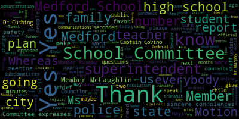
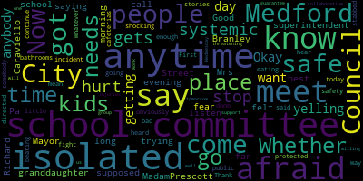

[McLaughlin]: Motion to approve.
[Lungo-Koehn]: Motion to approve is seconded by Member Hayes. All those in favor?
[McLaughlin]: Aye.
[Lungo-Koehn]: All those opposed? Minutes are approved. We have number five. I'm not sure if anybody wants to table this. Report of subcommittees, rules and policy, subcommittee minutes.
[Ruseau]: Motion to table to the next meeting.
[Lungo-Koehn]: Motion to table by Member Rousseau, seconded by Member McLaughlin. All those in favor?
[Ruseau]: Aye.
[Lungo-Koehn]: All those opposed? reports of subcommittees have been tabled until our first meeting in January. Next up we have number six report of the superintendent superintendent superintendents updates and comments, I'm going to turn it over to Dr. Reese Edward Vincent.
[Edouard-Vincent]: I too would like to open by just saying that I'm very pleased that our teachers contract was ratified this evening, and there will be further labor update later on today's agenda. I do want to just start with saying once again that during this month of December, we want to first recognize those that started celebrating Hanukkah last evening, and that Hanukkah will be celebrated for eight days, and again, we wish all of our Jewish friends a happy Hanukkah as they celebrate the Festival of Lights. The winter solstice, sometimes also referred to as Yule Day, that will begin on Wednesday, December 21st, which is the shortest day of the year. And in some cultures, the winter solstice signifies renewal and fresh beginnings. Following that, Christmas Day this year falls on Sunday, December 25th, and Kwanzaa begins on the 26th and lasts until January 1st. No matter your celebration, all of the holidays mentioned celebrate with the lighting of candles. Maya Angelou once said that we are more alike my friends than we are unalike. So in the spirit of the holiday season, I would like to extend thanks to the following who have helped to make sure all of our families within Medford have had a happy holiday season. The Andrews Middle School and the McGlynn School are both hosting Trees of Warmth, which collect donations of hats, new hats, gloves, socks, scarves, and even coats that will be accessible to students in need before the holiday break and throughout the winter season. The book school hosted their monthly food drive donations and collected over 160 bags of food. Special thanks to Whole Foods for providing bags and our vocational school for providing color flyers that went home with every student. I'd like to recognize our Director of Arts, Suzanne Fee, and our high school teacher, Medford High School teacher, Kaylee Lanzilli. They are determined to make numerous students' holiday wishes come true. Working in collaboration with the Medford Family Network, as well as all of our K to 12 families, they reached out to our teachers, administrators, parents, administrative assistants, and others in the school community to help provide them over 15 families with wonderful holiday gifts. So thank you for your work in that area. I also want to recognize the Mustang football team. They are busy collecting gift cards for the Medford family network families, and the Mustang boys basketball team are also collecting non perishable items for all of the micro pantries in our city. For those who attended the home opener this Thursday. and bring a brand new non perishable food item, the ticket price to attend the game will be waived. Again, if you go to the home opener this Thursday and you bring a non perishable food item, your ticket price will be waived. I also want to thank Teamsters Local 25 for providing bags and bags of toys to the Medford Family Network, as well as Gilbane Company, the Medford Kiwanis Club, the Medford Fire and Police Departments, Toys for Tots, and the Wonder Fund, of which the mayor is a big supporter. We are so lucky to reside in a diverse and historic community that remembers to take care of those in need. The goodness in Medford reminds me of a quote from the movie, It's a Wonderful Life. Remember, no man is a failure who has friends. We have a huge village of friends who take care of each other in our school community. We are not called the mighty Mustangs for nothing. Great job, everyone. You make me very proud to be your superintendent. I would also like to take a moment to recognize our fall 22 GBL all-stars. For boys cross country, we recognize Sam Orcutt, TJ Higgins, and Colin Lally. For girls cross country, we recognize co-MVPs of the league, Anna Casey and Yasmin D'Souza Vieira. For boys soccer, we would like to recognize Oliver Lolliker and Jordan Ionkeith. For girls soccer, MVP of the league, Emma Casey, Maria Colombo, Riley Walker, and Haley Duarte. For girls soccer, Eastern Mass all stars, Emma Casey, and Maria Colombo for golf we'd like to recognize Devin page, and Lewis Pacheco for girls volleyball, we'd like to recognize Isabella second ratio, and Sophia. For football, we would like to recognize Stevens, Exeter, Dom Rizzo, and Samuel Nazer. Thank you and congratulations to all of our fall sports athletes. And we wish our winter athletes all the best as they begin their games this week. There are a few reminders. This coming Wednesday, December 21st is the last opportunity for our seniors to take their class portraits. Please do not miss out on this opportunity so that you can be included in the yearbook. Also, we are continuing to pass out our COVID tests. This Friday is a half day before we break for our holiday break. We return to school on Tuesday, January 3rd. My final remarks that I would like to share are about a very serious incident that took place today at Medford High School. Earlier today at the high school, we had a student, one of our students was involved in an altercation and that student was stabbed. I have spoken with the student's mother and she has shared with me that her child is stable. I also want to share that the defendant in this situation has been identified and is in police custody at this time. I want to say a special thank you to our teachers, our staff, who supported all of their students while we were conducting the stay in place at Medford High School. I'd like to also extend special thanks to our nursing staff for their immediate response to the Medford Police Department for their support, Medford Fire Department, the mayor's office that was with us today, and EMS for all of their support during today's situation. We will continue to work collaboratively with the police department, as this investigation is still ongoing. Thank you.
[Lungo-Koehn]: Thank you from the chair if I may, I want to thank the superintendent for comments. First and foremost, our teachers who navigated the almost two hours in the shelter in place while the police were able to do their work at the high school. We thank the teachers, staff, the nurses, thank the police department for being there and obviously going to be a presence throughout the week. We do have chief of police here. also Captain Covino, who will be able to answer questions if we do have any questions, and maybe give us an update right off the bat. But please know we are taking this extremely seriously. Safety of our students is our utmost priority. I think you've heard from this committee that we recognize there's a systemic issue, and there's a culture and climate study that needs to be done, and that's just one thing that needs to be done. I know many of you have said it on the floor, I say what I need to say quite often behind the scenes, especially out of respect and pushing for that change. Everybody knows I'm making the changes on the city side, and we do want to see positive changes for our students on the school side too. We do recognize that. We have asked for a culture and climate study a year ago, and I know that's out in procurement now. Dr. Cushing told us today. Just also please know, as soon as I heard about this, I was at the high school with our communications team, also our board of health director, who is our emergency management coordinator for the city. We went to the high school just to make sure we could lend a hand any way possible, work with central administration to get communications out, to make sure we were crossing all our T's and dotting all our I's, and the students are our utmost priority in their safety. There is no imminent threat. I'll ask Captain Covino to maybe come up and give a little more detail. There's no imminent threat. We have a plan for tomorrow between the bathroom plan, extra staffing in the hallways and the cafeterias. We're asking our teachers for support. We do have a plan. We're gonna implement that tomorrow and any other details you can give Captain Covino. I know you're actively working the situation.
[Covino]: Good evening. We have already planned to have some added personnel at the high school to be visible in the hallways and around the building. support. They're not doing an investigation. They're just there for support for the school, the students, the faculty, and everybody else that may need to talk to them or pass on any information. They will be there for the week until school break. And after that, we can reassess the needs of the school and the properties and so forth. Does anybody have any questions for me?
[Lungo-Koehn]: You could tell us a little bit. I know everybody's been watching the news and Schools have sent out a number of communications to parents and faculty and staff, but is there anything else you can share about the incident that we don't know about in the last hour that we've been in executive session?
[Covino]: Nothing's changed since the news has been on since late this afternoon. Everything's been already spoken about. So everything you've seen in the news today is where we are. The investigation is still ongoing and pretty much status quo right now.
[Lungo-Koehn]: And we'll have additional professionals and counselors in the high school to deal, along with the police presence. We'll have additional supports in place for our faculty and staff tomorrow. We've called in outside agencies as well as additional counselors from the other schools to come help. Any?
[Covino]: No, very welcome. Thank you.
[Lungo-Koehn]: I know that people may be here to talk, Um, ask questions, voice your concerns. Please feel free. We're going to open it up to the floor. We ask people for their name and address for the record. And if we could limit it, we have a number of people online as well. So two minutes or so.
[Scarpelli]: Thank you, Madam Mayor. Thank you, George Scott Pele. 27 Butler Street, Matthew, Massachusetts. Um, what I'm hearing on what we've seen today was horrific. What I hear and see from this committee is just as bad. This isn't something that we're looking at systemic. This is something right now that's happening right now. Our kids are afraid. My daughter doesn't want to go back to school. Where is the urgency? Where is your urgency? A few weeks ago, we had parents up here talking about the fear they had about their daughter being beaten up. And we had a consultant and I've asked teachers, I've asked students, have you seen the change? Nothing, nothing, nothing has been done. And to sit back, I'm gonna speak and then I'm gonna leave because I don't want it back and forth, Madam Mayor. This is what we're seeing with my daughter, her friends. I ran up to the high school just so I could be present for her, just so I could tell her her dad's outside. I see over and over again, I saw Madam Superintendent, this is not an isolated incident. To write that this is an isolated incident and to say publicly this is an isolating incident is false. This is not. This is not. And I'm scared, and I'm disgusted, and I feel bad for my daughter and her friends. And this might be not the best thing a city council should do, coming up in front of a body and expressing themselves with this motion, but I don't care. You have principals and assistant principals that are running around that school with no support. for rules that have been implemented by this body. Give him back the tools, give them back the tools so they can run the school system the way they see fit to keep our kids safe, period. And then look at your studies and then look at your consultants and see what they said.
[McLaughlin]: you're not willing to listen.
[Scarpelli]: I'll be honest with tomorrow. We've asked for an emergency meeting didn't didn't go through only three members voted for an emergency meeting. We have a forum for people don't feel like they've been heard today to be up for the city council tomorrow and express their concerns and I will be honest with you. My daughter will not be going to school and her friends are not going to school.
[McLaughlin]: Member McLaughlin. I think it's unfortunate when a city counselor won't have a back and forth with constituents as well. And I am a constituent and I would like to have a conversation. I would say that it is inaccurate to say that nothing has been done. That's not accurate. Number one, our police have been involved. Our school counselors have been involved. And particularly from someone who served on the other side of this table, and you know what the restrictions are, to sit here and politicize in front of cameras is completely egregious. and unacceptable, I'm sorry, Mr. Scarpelli. And my children go to school as well, and I worry about all of our children. I'm not here because it's enjoyable, I'm here because I care as well.
[Lungo-Koehn]: And if I may, just about the tools, Councilor Scarpelli, about the tools. I know it's out there that we got rid of suspensions and detentions, that is absolutely not true.
[Scarpelli]: Sure. So I will tell you, as a parent, you're asking me to have a back and forth? As a colleague, I haven't heard one word from you. I haven't had one word from anybody. I've publicly put this out there because we haven't heard one word from any of you. Well, one word, yeah. So I will tell you, as a former member of this body, I worked diligently to make sure that we implemented a plan to keep our children safe from bullies, not the opposite, because that's what we're feeling. That's what our kids are feeling. Whether you want to see it or not, our children are telling us that they feel that you're protecting the bullies. You're allowing them to run the show. If you ask any kid, any child up there, they're telling me that they feel unsafe. They're telling me that they don't have the structure that they felt in the past. So to tell me that the tensions, suspensions, well guess what? If you're saying that, And that's not happening, it's not getting to the ones that it's happening to, because the kids are saying that. The kids are telling me that there's no suspensions, that they're not gonna get detention. The kids are saying it. Maybe so, but let me ask you one question. We've had assemblies for everything. After that incident with that young lady, did you bring that student body in? Did you bring that student body in and give them security to let them feel that they would be safe? Have any of you, other than Go Mustangs or emails to people that if they get to them or not, did you sit in front of the student body yourselves? After that incident, look them in the eye in the gymnasium, like you did when you were all there cheering them on for the football game, and look them in the eye and say, you're safe because of this. You're safe because we're going to do this. You did not. Correct? Correct. Thank you. That doesn't have to be a law.
[McLaughlin]: There are laws that we have to follow, and I know that you understand that because you were on their side. But you're not explaining that.
[Lungo-Koehn]: Every child has rights, we have to make sure.
[Scarpelli]: We understand that, but that doesn't mean the tact and the professionalism that you have from your teachers and administrators up there to bring the rest of the student body in and to let them know that they're in a safe environment. You don't have to disclose anything, any other news about what's legally can be said and what can't be said. You're all educated, very bright people to sit our student body down and look them in the eye and say, you're okay and this is why it's gonna happen. I'm not asking you to disclose any information about the perpetrator, the person who was injured. I'm not saying that. Let the kids know that they're safe, because you haven't done that. You haven't.
[Lungo-Koehn]: Thank you, counselor.
[Caraviello]: Good evening, Madam Mayor, school committee people, superintendent, Richard Carabiello, Memphis City Council, 74 Prescott Street, Memphis. Now, I know the fear that Mrs. Brantley felt when I got that call from my granddaughter this morning saying, Pa, I'm afraid, come and get me. The school is supposed to be their safe place, not where they should be afraid to come to. And for far too long, it's not a safe place for them. And listen, I know you're trying to do the best you can, but obviously it's not enough. And to say that today was an isolated incident was a little shocking to me when I heard that. It's not the way it should be. Our kids should be protected up there all the time. Whether it has to be more public safety up there or whatever, more needs to be done than what's going on. I mean, I hear stories about kids eating in bathrooms because they're afraid to go in cafeterias. They fight all the time. This cannot continue to go on. I know you said it's systemic. It is systemic. And it's got to stop. And it has to stop now before somebody gets hurt and gets hurt bad. Thank you.
[Lungo-Koehn]: Thank you. Mayor. Member McLaughlin, then you're next.
[McLaughlin]: Thank you. And I wanted to add in terms of the isolated incident, I believe that, you know, if there are officers here and or the superintendent that wants to speak to what that actually means, it means that It was an isolated incident in the bathroom in that instance. It does not mean that there's not a systemic issue that has been ongoing and that we understand that. This was an isolated incident today in terms of what happened to this individual student in the school today at this time. That was the isolated incident. It's not that any of these are isolated incidents. We know there's a systemic issue. That's why we're here to try to help change that. But it takes more than seven people to change a school district. It takes a community. It takes a community working together to change a school district. It takes a city council that is willing to work with their school committee and not get up here and yell at them in front of TV cameras. It takes working together as a community, all of us. and being good examples for our children, not bullying each other, not yelling at each other, not fighting with each other.
[Caraviello]: First of all, I wasn't yelling at anybody. No, that wasn't directed at you. I wasn't yelling at anybody. But again, this is not isolated. Whether getting a beating or getting stabbed, they're both like threatening injuries. So that's not isolated. That's all one and the same. And just don't say that the city council isn't willing to work with the school committee. We are. Okay, anytime, anytime, the school committee needs us, we've been there to support the school committee. Okay, well, I say, anytime, anytime this group wants to be collaborative, we'll do it tomorrow, we'll do it Wednesday, you do it any day, any day they want to meet, I'll be there to meet, and I guarantee all my other people will meet also with you. So, again, this is again, not isolated.
[Lungo-Koehn]: Thank you, Mr. Kelly.
[Kelly]: Mayor, there's also someone online. Good evening, Danny Kelly 41 Myrtle Street. I actually teach at the high school as well. So this is actually my last week at the high school. I just took a new position with the Laborers Union so I feel like it's a good time to talk, not on really the negatives of today of course it's a bad issue. But I did want to say I think one of the most important things before I leave just to say, I think this culture in the school can be strong because of Mr. Paul DeLeva and Chad Fallon. They're two unbelievable leaders, but what needs to happen a little bit there needs to be a little bit more fun with the kids to be honest. We talked to them, I've coached baseball and football in the city for 10 years. I went to Medford high school, and I thoroughly enjoyed every minute working here. But to be honest, the things I worked in another school district after MCAS testing, we had events we had rock climbing walls come in. We had people coming that was a little bit more fun. I think to be honest, I think one of the things that needs to change, in my personal opinion, and leaving and teaching for a long time here. is this needs to be a little bit more fun and events throughout the year. Even in assembly about anything, when we do have assemblies and the superintendent holds them, they're good and they help improve the culture. The pep rally once a year helps improve the culture. If we can do that multiple times a year, after an MCAS testing, when finals happen, when I was here in high school, after finals, they used to let us go home. You know, it's kind of like little stuff you can look forward to after MCAS, if they could bring in a type of event, something like that. That stuff helps improve culture. I think even more pep rallies throughout the year, not just one in the fall, Maybe one the spring anything to help improve that just school morale, me looking as an outsider now loving every minute of being here working here. That's the culture stuff just what we sit and talk to the kids in the construction shop all the time so just something you guys consider and thank you.
[Lungo-Koehn]: Thank you. Thank you. Very helpful.
[LaCamera]: Hi, my name is Deborah camera, I live at 52 mom with app here in Medford, I'm a grandmother. And I got a phone call from my daughter today that my grandson wanted to come home that there's been a stabbing at the school, I ran out of the house working from home in my pajama pants. What I learned from being around the parents today was that this is not an isolated incident. There were several other attacks, people being bullied for just being different. A boy who is being bullied every single day because he has autism. And it just saddened me. What can I do as a member of this community to help these kids, not just my grandson, but the children that are being, that are bullied, being bullied, and bullying because something's going on. And you're right, we do have to work as a community. And I read about the girl who was beaten up a few weeks ago, and I don't know her personally. I met her mom today. But there were three or four other parents there who told me that they have restraining orders against students. That's frightening. And I don't know what is it going to take. Did the bullies that have been identified? I don't know their names. They're not the same. So there's several, it's going on. I saw that video. It was horrific. Okay. I saw the beating of that girl. It was horrific. You don't want your daughter or son, and not only that, they can't go into school and be feared. I don't want my grandson going back to school until something can be resolved. Does that mean somebody who's been identified as a bully or somebody that has a restraining order on them has somebody that is walking them to and from their classrooms to protect everybody else? I get it, they're minors. I get they have rights too, but you know, I'm open to dialogue. I like to know what I can do to help. Thank you resolve this.
[Lungo-Koehn]: Thank you.
[LaCamera]: Thank you.
[Mongello]: Hi, my name is Jana Mongello I go to Medford high school and I just want to share my experience that I have today at the school. We got it was this actually the second shelter in place that we had, and it was a scary experience, and this is one of the third things that has happened. throughout the whole entire year and I feel like there's no difference at all and I feel like throughout the whole day today I was scared and I want to go home and it's like scary going to school seeing all these kids fighting seeing again no change whatsoever that has happened and I just call my grandfather because I wanted to go home and it was so scary and I just feel like again no change.
[SPEAKER_09]: My experience was I'm a senior I'm at Fred High School so You know, I wanna have like a good last experience with like Medford High School, like I'm graduating. No, we're getting locked down in a classroom for three hours in like fear for the whole day. I texted my dad and he came to the school to make me feel safe and stayed so me and my friends felt safe. And I don't feel safe anymore at my school, which is very disappointing.
[Lungo-Koehn]: Thank you for speaking out.
[Nocella]: Hi, how's it going? My name is Jake Nocella and I'd like to start by saying like I like my school because the teachers like Mr. DeLava and other officials that help like lead us in the best direction. But the incident that happened today could have happened to me a couple of weeks ago. A couple of weeks ago, that same group of kids threatened to stab me. My AP was aware of it. My guidance counselor was aware of it. Those kids got no disciplinary action. We're back in school the next day. And now I'm like thinking, what if that was me? What if that happened to me? And so it's like, it's scary because like, just like I shouldn't be in fear, like going to the bathroom at school, just like kids like that hang out in there. And like, I know like we have teachers that like make it a better place for us and try to like spread, I don't know, like spread goodness and happiness, but it's still like terrifying.
[Marino]: Thank you.
[Lungo-Koehn]: Thank you for speaking out.
[Marino]: I'm Derek Marino. I'm a junior at Method High School. And the incident today, I feel like, There was a lot that could have been done to prevent it. There are people like that, you know people hang in the bathroom all day. They sit in there, and they threaten people it's relatively a lot of the same groups of people as well. And they. They go in there, they sit in there all day. There's no disciplinary action. Like Jake just said, he was threatened not too long ago and nothing was done about it. And then the whole incident today was, I could see everything that was going on outside the school. And you could see the groups of even parents trying to get the kids out of the school and people are crying. It was a scary event. you know, we could see everything that was going on. And I just feel like a lot of it is preventable. And there are a lot of people that are trying to help and prevent situations like this. But I just feel like a lot more should be done about it and can be done about it. Thank you.
[Lungo-Koehn]: Thank you.
[McLaughlin]: I just I just remember my girlfriend. Thank you. I just wanted to thank the students for their bravery and coming up and speaking I think it's really important and I think it's really important that the students know that you can reach out to us an email phone call phone number everything's published on the website, you can reach out to us anytime to we don't know some of the circumstances that you're sharing because we're not necessarily allowed to know I'm not asking that you're sharing private information about other folks. But I am saying in your own experience, if you wanted to share your own experience, we're here to listen to you as well. Because some of the things I think I knew that before I was on school committee, I assumed school committee knew everything that was going on. That's not accurate. We don't know everything that's going on, because there are personnel issue, there are FERPA, there's lots of laws that don't allow us to know specifics of what's going on. And I know people think, keep thinking, Oh, they keep saying laws and laws. No, there really is. We're not even, I don't know. There's other people from the community come to me and tell me things that they understand from their children, telling them that in high school, I don't know the circumstances because central administration is not allowed to tell us certain things because of laws. So it's really important that you guys know that we are, you're our constituents as well. You can reach out anytime. And I think it's really brave that you're willing to get up tonight and speak. So thank you.
[LaCamera]: Thank you.
[Kerber]: Lisa Kerber, 47A Sheridan Ave. I am the first of now the third generation in this school system. I have grandchildren in middle school. What I've witnessed in the first three months of this year in the high school is horrific. I went through this, my children went through this high school, never, never had situations like this. We had bathroom monitors and we had officers in the school. for the very reason of what these kids are dealing with now. That needs to be put back in place.
[Lungo-Koehn]: We do have two school resource officers.
[Kerber]: Two resource officers in that entire high school is not enough. We need bathroom monitors, monitoring the hallways, period, the end. Nobody gets to hang out in the bathrooms anymore. And the second part of this, it doesn't start at the high school level. I have a granddaughter in elementary school. six years old, who is terrified every day to go to school because of a bully in her classroom, that her teacher has to put her body in between him and another student. That's unacceptable. So we need to start from the bottom up. And we have alternative schools. That's what they're there for. Those teachers there are equipped to work with these children. I'm not saying toss these kids aside, but these children need work. We need to give them the tools in order for them to work appropriately. Our teachers in the schools need to educate. They are not there to be bodyguards. Thank you.
[Reynolds]: I'm going to be very quick. I'm sorry. It's Kathleen Reynolds, Lambert Street. I just want to read you a couple of text messages that I got from my daughter today while she was at school. Mom, I'm scared. I'm very scared. And I had to go look and find out why, like, why are you scared? And she said somebody got stabbed at the school. And it was horrifying to know that just not two months ago, another girl was assaulted at the school. And I can't get to her. I cannot get to her. And she's scared, and I'm scared for her. I just don't feel like these kids feel safe anymore. and it's starting to become a problem. And instead of protecting the kids that are doing well, we're protecting the kids that need help, and they do need help. And let's give them help, but let's also look at the kids that are doing things that are well. She lost four hours of education today because she was stuck in a room and couldn't go anywhere because somebody stabbed somebody. This is not our community. We need to do better. Sorry, but I'm upset. I'm very upset. And we need to do better.
[Flynn]: Jackie Flynn, live on Rockwell Ave. My child was in that school today. She didn't even know why she was locked down. I couldn't get my TV to work, couldn't find out, ran out the door in my pajamas to find out that everyone was there, there was a stabbing. You could see staff sitting there through the windows and one particular teacher with her hand like this, like we were inconveniencing her. Why don't we know things? Understood things evolve. We got emails later, nothing, What about, hey, if you haven't heard from us, this is not your child. Many of us didn't know if it was our kid that was hurt. All of you have kids. Imagine sitting out there just wondering, is that your child? Just hoping for a glimpse of them. The school has terrible cell phone service. Luckily, half of us were able to hear from our kids, but that's how we found out. Bullying is allowed in our school because our school allows it, and I blame all of you. Laws aside, everything aside, we all know it's here. We have children, we have social media, you see it every day. Between the stupid things on TikTok and everyone filming it on Snapchat, it's seen, we know it's here. My daughter has been bullied in the Medford public school system for years. I have personally reached out to everyone and forever have been told it is her fault. Why? Because she's different? That's not fair. She got hit in the face with a 2x4 last year. She got sent home with a bloody mouth and she was told she shouldn't ask the student for help. She missed days of school. She had her braces removed. And that kid went on like it was nothing. He was fine. My child missed the first two weeks of Medford High because I was terrified to send her for this reason. She had a hard time learning remote and wanted a chance to go make friends. I won't send her back. I don't want that phone call that something happened to her just because she's different. She's not going to be beat up in the school just because of that. I've talked to people, and you know what I get told? It doesn't sound like it's a serious threat. Really? So it's not serious until it happens? Nothing's done, so we take the step after a child's been stabbed, after a child's been beat. We all come here, we're all mad, and we tell you how we feel. A week and a half later, you guys will pretend to do your studies, we'll see a bunch of it, half of us won't even see it or understand it, because you know, it's just how it goes. And everyone goes on their merry way like nothing happened. The other superintendent, that was at your school, you were there. How come another teacher came out instead of you to address us?
[Edouard-Vincent]: I was supporting and working with the police earlier in the day during the ongoing investigation. I did go out later in the afternoon. So we knew that staff had gone out earlier to speak with parents.
[Flynn]: How come an email could have gone out saying, hey, we can't release names? Understandable. It's a child. I get that. If you haven't heard from us, your child was uninvolved. What's wrong with an email like that? For parents to know, like, okay, I haven't heard, at least I know my child's not on his way to a hospital or on her way to a hospital or just lying somewhere in the school. And there's another school. There's another school. The Brooks isn't that far from there. And that kid got out. What if he happened to go over there? I mean, this world's going crazy. Look at the other elementary school. How are we going to keep all of our kids safe?
[McLaughlin]: I just want to say thank you. I think it's, I'm really sorry about what happened to your daughter, and what continues to happen to your daughter. And I think coming up and offering solutions like an example of that is a really great example of things that we can do and that we can put into place I think you're right you know we should be able to send out a letter and say if your child is not involved in email or something on our website. If your child if you weren't contacted your child was not involved, I think that's completely reasonable and I think being able to have back and forth with folks like you who have had real experience on the ground is really important. And I wanna hear from you. I haven't heard from you. I would really like to hear from you, especially when you say your daughter's different and she's being bullied because she's different. Nobody should be bullied and especially nobody should be bullied because they're different. So however we can help, I do wanna talk and think about positive solutions that we can come up with together. So please reach out or leave me your, I'll take your phone, whatever, leave your number whenever. And I'm really, really sorry about your daughter. And if there's anything I can do to help improve that, please really reach out. And I know my colleagues feel similarly.
[Flynn]: I have reached out. I reached out to you, Madam Mayor. Many times, my child's not only bullied at the school. I have the emails. I'm not going to expose you all here, but I have reached out to you personally. My kids, not even only in school, they're bullied. They're bullied going up the street. They're not allowed to leave the house because of it. You told me to find a lawyer. I went to Medford Police. Medford Police sent me to several courts. Some of them sent me to Cambridge. So as we say, we're going to do stuff that prevents it. All you do is send parents on a wild goose chase and walk kids in their room, so.
[McLaughlin]: Wow. Thank you.
[Gonzalez]: Maria Gonzalez, graduating class of 1996. And I state that because in 1991, there was a racial riot on December 10th. I was two months into my freshman year. A boy was stabbed by another boy at lunch. And to think after 30 years that this is still happening at Medford High School is really sad. 30 years. That's all I can say.
[Bear]: Hi, my name's Tiffany Bear. I live on Usher Road. My daughter has expressed several times that she's scared to go into the restrooms because of these people being allowed to be in the restrooms. The hall monitors that you mentioned, their hands are tied. They're not allowed to get the people out of those restrooms and even escort them to their classrooms. They're told to F off. These guys have no power whatsoever. We need police officers, someone that they're scared of. These bullies and hoodlums and whoever they are need to be in class or they need to be out of the school, period. Back in the day when I was in high school, You fight, you stab someone, you go to juvie. If you can't handle them in this school district, get them the hell out. Our kids that are the good kids need to be supported. They need to be able to get an education. They don't need to be sitting in a classroom for two plus hours losing their school time because you guys don't have a handle on what's happening in the bathrooms at the school. It's insanity. My daughter probably doesn't drink water in the day. I forced her to bring water, but it's never drank because she probably just wanted to go in the freaking toilets. Come on, people. And at one time, Paul said basically that bringing a pocket knife to school isn't a suspension offense. Is it now? Having a knife at school, is it now a suspending, you know, offense? You should be out of the school. There's been an arrest. There's been an arrest. And after that last one, when the girl got hurt, the crap beat out of her by those two sisters that were allowed to stay in school after threatening her life. They beat her up. You guys, oh, we're going to get a study. What the hell is a study going to do? We need to shit now. Follow what's in the handbook. These people need to be expelled, suspended. Period. Not suspension in school, because that's woke and wonderful. No. They need to get out. Out.
[Santiago]: Diana Santiago, Paris Street. It's very concerning everything that's been going on. And I hear a lot of the law, the law, the law. And yes, there is a law, but sometimes laws have changed and evolved, and they've gone too far in one way. And you're saying your back is against the wall. Well, this can be the element of change. The laws need to change so that your back is not against the wall saying, I'm sorry, I can't do anything. Kids are getting beaten. Are we going to be here three months from now when someone's kid is dead? Then will the law change? Let's instead of being the legacy of Medford of violence for the last 30 years let's be Medford leading the country. My sister is a fourth grade teacher in New York. I have friends who are teaching in California. It's the same systemic problem everywhere that's adopted this policy. My teacher, friends and my sister have been told, if a child is beating up another child, no matter how severely you can not touch them, or you will be fired. That is the message that is getting delivered to the children, and the teachers in other school systems. I'm not saying it's Medford. I'm talking about the systemic problem. We need to make sure that is not where our country is going and that's not where our town is going. I'm asking you guys to do better, be better. If law doesn't work, then get in Desi, get in whoever we need to, the governor, and change it for our town and for everybody else. Because we have hundreds of victims at the school. There's the one that got beat, but there's all the other kids who are suffering the anguish of, am I next? No one should have to move here and send their kids to school being like, oh, well, which one is gonna get pummeled next or seriously hurt? This should be happening now. Let's do better, be better together. Don't just sit there and tell me I can't do anything because the law, then let's change it to make it better. Let's find who is succeeding in this country in having better programs for everybody. Thank you.
[Lungo-Koehn]: Thank you.
[Began]: Good evening, Sean Began, Lawrence Road, Medford. I wanted to talk a little bit about messaging and perceptions. And I think there's a problem with both the messaging and it's become a problem of perception. Right now, there seems to be a perception amongst some of the students at the high school that the high school is an acceptable and maybe even the preferred place to settle your differences by having a fight. And those fights are becoming more serious. There's no doubt about it. Uh, so how did we get to this point? And I think that also goes to the messaging that's been coming in from adults. And I'm not blaming teachers. I'm not blaming administrators. I'm not blaming politicians. I'm speaking in regards to adults in general, and that includes me as a parent. It includes everyone who has a child in the school system, the messaging to these kids over the past two years, when they were dealing with COVID in regards to their education has been horrible and we've allowed it. And I think we're reaping what we sowed. This is some of the messaging that I've heard and that I've experienced and that I've been told about over the past couple of years. Come to class or don't, it doesn't matter. If you don't show up to class, there's no consequence. Cheat your way through the school year, doesn't matter. We know you're doing it, we're not gonna do anything about it. Talk back to your teacher, it doesn't matter. In general, do whatever makes you feel good. And it's little wonder to me that when we reinforce bad behavior, it then becomes criminal behavior sooner or later. And that's what we're dealing with today is criminal behavior. And if there's a perception, and I think it's a misperception, but there seems to be a perception amongst some students and some parents that there's no consequences for students that misbehave. And I think this perception needs to be corrected immediately. If this perception is not corrected, rather this misperception, then the perception becomes the reality, the fighting will continue, and it will continue to escalate. The school handbook, and I'm surprised, maybe I missed it, but I haven't heard this tonight from anyone. The school handbook very clearly states that fighting is a suspendable offense. It states it right there, it's in black and white. There's Massachusetts general laws that very clearly state that if a student brings a weapon onto campus, nevermind using the weapon, just brings the weapon, that's an expellable offense. That's state law. Now, these are also guidelines and state laws that Medford has adopted. These are things that apply to Medford students. So we shouldn't have the misperception that they don't apply. But I think we have a misperception that they're not enforced. And I think that also, again, is a misperception. I'm going to assume, and I don't think it's a big assumption, I'm going to assume that the student that brought a knife onto campus today and used that knife in a fight is being expelled. And if I'm wrong, I'd like someone to correct me now because that I think is a misperception that's going into this community. That student should be expelled. I expect that student will be expelled. Everyone in the community needs to know that that student is being expelled. And we don't need to know the student's name. But when we get an email like we did today from the high school that says that the procedures in the student handbook will be followed, all right, I don't want to hear that. Don't make me go hunt for the student. I mean, I'm an attorney. I love to look up laws. I research, whatever. Most people don't want to do that. You know, I spent an hour today doing it. You know, that's me. Most people don't have the time to do that. Don't make them go look for this. Let them know. If something like what happened today is going to happen, that child will no longer be in school. End of story. You don't have to worry about that child coming back to school because that's the worry. And that's the worry of the kids too, that these, that the children that are misbehaving, that have been allowed to get this, be emboldened to, to the extent that they think nothing is going to happen to them. That has to change very quickly. If it requires expelling 10 kids, expel 10 kids. If it requires expelling 50 kids, expel 50 kids. Do it quickly. Make the change now. And please, please, I would love to see a little emotion. Get angry about this. Someone on this committee, get angry about what's happened today. Let us hear that you're pissed off. Okay, don't sit on your hands tonight. I know everyone's worried about public meeting law and whatever it might be. Don't worry about it. No one's reporting. You get a little angry. Let us hear what's going to happen and don't be so coy in the future. Thank you.
[Lungo-Koehn]: Member Rousseau and then miss miss Puccio from online. So members
[Ruseau]: Thank you. I, this is a question I don't know if our attorney can answer the question or the superintendent knows the answer but I do not believe we can legally tell anybody what the consequences of a disciplinary action were, even if we are not talking about a student by name. Nobody in Medford knows who the student is. I'm assuming somebody knows who the student is. I also assume somebody knows who the victim was. So, you know, it'd be like talking about, well, the president, we won't mention his name, is in trouble and this is the consequence. So the school committee also does not receive any notification and cannot have access to information about the consequences. And That's just a fact, whether or not the superintendent can tell the community that expulsion will happen. I don't know the answer to that question but I do know that we cannot receive notification that a student will be expelled. I can read the law as well. If there was a murder, I think it's fairly safe to say that most of us would conclude an expulsion was on its way. You know, but, but we will not receive that notification, ever. And so I just think it's important when asking these questions to, to be clear who you're asking, because you won't get the answer from the seven school committee members, what the answer is, ever. We do not write the law, you all get to change the law by going to your state reps, we write resolutions all the time. We are always calling our state reps and state senators and saying, we don't like this law. We want this law change. We have one on the thing tonight, exactly that I have the floor, so you can wait Mr beacon. Okay.
[Began]: I'll wait patiently.
[Ruseau]: Thank you.
[Began]: But I want to be heard.
[Ruseau]: I've heard people say they want to change the law. There are so many laws I want to change. And I think many of us have very specific laws in common with all of you that we want to change. But we don't write those laws. We call our state reps most many of us know our state reps and state senators, and we give them our opinion very often. Okay, but we don't like the laws. So, you have a choice, we can break the laws, which I know that some people are quite comfortable with. And therefore, if we break the laws, if we break the laws, then the people that we broke the laws, you know if we just sit up here and we somehow know the information about somebody who's accused of something, and we disclose it. Well, that make make us all feel good until we have to write the check as a city for violating the law, so we are not. None of us are afraid. We are also not going to get that information to share it with you because we're not going to get it. Okay. Mr. Beacon is going to tell me how I'm wrong now. Thank you.
[Lungo-Koehn]: No, no.
[Began]: Madam chair. I can't believe that I just asked this body to not be coy and be more direct. And what I got. And what I heard was five minutes of being coy and not being direct. This is a very simple matter. It's a simple matter of messaging. Let's not get into the weeds about what the law is or isn't. It's a simple matter of messaging. A kid brought a knife to school today and stabbed someone. That's what happened. That person is going to be expelled. If that person is not expelled from school, we have a serious problem because the law allows and calls for an expulsion. End of story. I don't need to know who the kid is. I don't need to know what the ultimate punishment was because in my mind, if it's not an expulsion and I find out that kid is back in school, I'm going to be back here and I'm going to be livid. Right? And everyone behind me is going to be livid. And this is what I'm talking about when I'm talking about messaging. Be straight with the people in this city. It's very simple. Just be straight with them. This is what happened. If X happens, Y will be the result. It's very simple. Let's stop, please, with the coyness, the smugness, the lectures. Enough.
[Ruseau]: I appreciate that an attorney, I'm assuming who is a member of the bar doesn't think that the law matters. The law actually, if I could speak, the law does not actually include the school committee and discipline. The principals have all authority on suspensions. In fact, students can't even appeal it to the superintendent unless it's more than 10 days. So, you know, if you wanna come and ask us to do stuff we can't do, and that makes you feel good, then you should do that. But if you want something to happen, then we do have to pay attention to the law. You know, my daughter was also in that school texting me and I was very upset too. I'm not just like some rando. Okay, I know how you felt. I know how you felt. My daughter was texting. Point of order.
[Lungo-Koehn]: Hi, my name is Ashley. Point of order, member McLaughlin.
[McLaughlin]: I just wanted to ask if I might speak in order. Yes. Thank you. I just, thank you, Mr. Began. for your comments. I think that there's a little bit of misinformation in that as well. And I'm sorry that people feel that we're being corny, but I do have to say that there are very strict laws. However, that said, in terms of FERPA and other things, I know people don't wanna hear it, but it is the fact, like it really is, number one. Number two, we should care about all of our kids, right? We really should care about all of our kids and we really should. And I don't know the circumstances of today. I know what I'm hearing from other people. I know what the bit that I've heard Um, from, from administration or what have you, but I don't know the details. I don't even entirely know the details from the previous event because of some of the things that I am not literally allowed to know because of the law. Now you guys do because, or I assume many do. If you have children in the high school, your children can come home and tell you who that child was. Maybe if you have kids in elementary school that you don't, it gets to the grapevine. People start talking in the community. It was this kid. It was that kid. That's how people know who that is. Number one. But You know, as a, as an individual, we can't say that, but I do want to say like going back to the bullying law, when we're talking about laws being changed, laws being changed, like the bullying law in Massachusetts, do people know how that law was created? Right? Phoebe, right from Western Massachusetts, the girl that was bullied to death, right? That was the law that happened here. We don't, none of us want to see this happen with our kids. None of us want to see a Parkland. or Newtown or any of those things. This is horrible. We know this is horrible. I'm losing sleep over it. I'm sure you guys are losing sleep over it. It's my kids too. It's your kids too. We all really care. I know people are groaning because it's like drone on, drone on. You know what? I care too. I really, really do. And what are we going to do about it? People are coming up here saying change the law. How do you change the law? Do you guys know how you do that? Same thing, I've been advocating for years for laws to be changed. I go to the State House, I protest, I do hearings, I give my story, I do all kinds of stuff. I don't just get to go. Change the law. I wish I did. We don't. But we can, as a community, get together and make a friggin' difference and change our schools. Like, we can do that. So we have to work together. We can't fight with each other. Follow the handbook. If it says, okay, if it says, if the handbook says. okay if a handbook says there's a weapon and if the handbook says there's a weapon and weapons result in expulsion if that's what the handbook says then that I assume is going to be what is going to be happening because that is what the handbook says but if there's a legal issue that we don't know about because maybe there's some presumption of innocence for something not this case I don't know I'm talking about any cases we don't know all the details nor do you so we can't just automatically and arbitrarily say this is what should happen with that kid and that's what should happen with this kid that's not how it works But you know what? I can sit here and argue with you guys all day long. You don't want to hear it because you're angry, and I don't blame you. Yeah, blah, blah, blah. I know. I don't blame you. When your kid is in danger, you feel your kid is threatened, I would be the exact same way. I have been the exact same way. We should be. But how do we turn this negativity into community and frigging collaborate? Oh, just follow the handbook. That's all we have to do? No, that's not all we have to do. That's not going to change at all. No, it's not. I disagree, but I'm happy to work with anybody that does want to make positive change. Thank you. Yeah.
[North]: Okay. Ms. Puccio, then we'll take our resident at the floor. Hi, can you hear me? Yes, thank you.
[Gabrielle Puccio]: Gabrielle Puccio, I live on 11 Painter Street.
[North]: Thank you.
[Gabrielle Puccio]: I spoke about a year ago voicing the same concerns I'm going to talk about tonight. I was one of the first students appointed to student advisory board and I'm senior class president. And I've understood the patterns in the city and I know that most of my concerns will either be ignored, swept under a rug or misunderstood, but I'm gonna try and get through to you for the sake of my classmates and for those who aren't lucky enough to graduate this year with me. The only things I want to be worrying about during my senior year are upcoming deadlines and tests, but the reoccurring violence at my school is not only horrifying, but leaves me left to wonder what's to happen to me each day as I walk through the doors. Will I be body slammed into cold floor tiles, or will I be repeatedly stabbed with a knife? Will I be sent to the hospital with life-threatening injuries? If the student safety is so important to this entire committee, then why are we only hearing from two members? Jobs are not being done. Just because it's not your child does not mean it's any less important. I'm tired of my parents worrying about me each morning when I say goodbye to them. I'm tired of being educated in an environment where I have to fear for my life. I'm tired of these incidents not having solutions. And most of all, I'm tired of having to share my concerns to a group who does not implement change. Political agendas and fall promises do not save student lives. Ignoring the issue is one step closer to a student losing their life. And at this rate, none of us would honestly be surprised, please, for the sake of the students in this city. Please find a way to ease our anxiety and propose ideas to improve this broken system. This is what you were elected to do. And right now it's unfortunate that you're failing us. I think you'd all rather listen to our concerns than attend our funeral. Please expel all the students involved in the incident today. Thank you.
[Barr]: Hi, my name is Ashlyn Barr, 50 Brooks Street. I was gonna say something about changing the laws, and I understand that it's not just snap your fingers, change the laws. There's a lot that goes into it. I think what's really important is to have a better communication. The communication, just for a small piece for today's incident, was terrible, okay? It was on three different platforms. It wasn't good. I mean, the communication at the high school is to the point where if I even try to call my kid out sick, The phone system doesn't even work so we're starting from the but we need to start from the bottom up with that. But aside from all of that, and communication from your representatives you were voted to be our representatives you work for us, we need communication from you. I don't know how to change laws, I'm an average citizen. This is the first time I've ever come to a school committee meeting, because I'm enraged with what's going on in my kids high school. Our children feel like we're not going to do anything. We heard it from four students today. We heard it from the president of the class and I heard it from my sophomore and his best friend today. Shame on us. Our children should not feel like we're not going to do anything and that none of this is going to elicit change. They should be going to school to learn. Teachers should not be using bathroom monitors. Teachers went to school to teach. They didn't teach to go to school to be security officers and break up fights. It shouldn't come with the territory. Maybe I'm thinking in La La Land, but it's not the way it's supposed to be. Our kids need to be able to feel safe in school and learn. You heard it from the students. I want you to do a forum with leadership for our students. And so you can hear them talk and hear directly from them that they don't feel supported. and that they feel that nothing's going to change. I'll show up to that. We should all show up to that. Teachers should show up to that. Teachers need to be heard. We're going to lose teachers. We're going to lose students. I have an eighth grader. I don't think I'm sending him to Medford High. Okay, that's a huge financial burden for my family. I don't wanna have to make that decision, but it's pretty much looking that way right now. So we have a lot of work to do. I'm here to listen to advice from you. I don't know how to do it. We need better communication, but this like constant fighting thing isn't gonna solve any problems at all. Please, as a community, we need better communication. Thank you. Thank you. Thank you. Jessica, Jessica.
[North]: I'm gonna go one-on-one, Jessica. Dr. Cushing, did you unmute her?
[Lungo-Koehn]: Thanks.
[Healy]: Hello. Jessica Healy, Full Lock Road. I just wanted to say that I'm noticing one of the biggest issues that we've had in this city for the past. A few years now, I don't know what it's been, four, maybe five years, is we've had elected officials now that are with the revolution. And I don't care what anyone has to say. They are just too political. They're too worried about what everything looks like, if everything is, you know, politically the right way. They don't want police in our school. They don't think that's safe for people of color. It's just it's gotten out of control. They don't want kids to be suspended or expelled Because that's not fair to people of color and it's Not good for kids of color because they get suspended or expelled more So now the kids know That they can run the school And that is what's going on the kids have run medford high now The teachers can't do it. The principal can't keep up And we don't have the resources there To help control the kids anymore. There's no fear at all So the kids know that they can do whatever they want in that school And that's what they're doing. I don't know what we're waiting for for a child not to show up at home one day Because they're going in the hospital. They're not going to make it home And that's when you're going to say. Oh, we really should do this That's all I gotta say is we have to get resource offices I always said in every one of our schools and definitely more in the high school because it's gotten out of control up there. Thank you
[South]: Good evening, Madam Mayor, Dr. Maurice, members of the school committee. First, I want to say, well first, I'm Steven South. I live at 106 Damon Road. I'm also the secretary treasurer of Teamsters Local 25. We represent all the school custodians, the security personnel, the assistant principals, directors, and school administrators, coordinators. First, I want to talk about a couple of weeks ago, the school committee approved a $50,000 study to look into, I guess, all the violence going on. But first, I wanna provide you all with some facts and some free advice that doesn't cost 50,000 because I'm there every week, my members are there every day. Well, let me talk about the facts. Fact number one is years ago there were more than a dozen security guards in the Medford public schools, the last of which retired in March of this year, Bill Mosaic. I was informed shortly after he retired that they were no longer going to have security guards at Medford public schools. This was by the administration that they were no longer needed. So my recommendation is that you use the 50,000 and hire another security guard. And then I've also talked to city counselors who I believe there's several in the crowd that would be more than willing to provide extra funding for security guards. So that's one. Number two, and we're talking about the decline in security. This is all in the last few years. Previous to this school year, there was always a security monitor at the back door of Medford High School from 2.15 when school ended until 9 p.m. when the last school event ended at that back door. And it's called door 31. It's where the pool and the gyms are. There was always a security person there every single day, seven days a week, signing people in, checking IDs, signing people out. And I know it's expensive, you have to pay personnel, but that's to make sure that this, School administration knows every single human being that's in that school after the school day ends and be able to monitor who's visiting the school's property. Well, last year that was ended. We were told it was too expensive and it was no longer needed. Now at 2.15 every day, my members, your employees are instructed to unlock the back door and it's unlocked from 2.15 till 9 p.m. every day. And by the way, I was here a few months ago reporting on the same thing and nothing was done about it. I believe that was right before the summer began I was here. spoke on this same exact thing. So also on the weekends, we used to have someone there from 7 a.m. to 9 p.m. at the back door, signing people in, checking IDs, signing people out. So this administration knew every single human being that was in Medford High School when it was not in session. And I'm talking outside of the children that go there. So that goes on no longer. People can walk in, they can hide weapons or drugs or anything else they want to, they can have their run of the school. Okay, that's going on. Someone earlier, I can't remember who said we have two school resource officers, that's not true unless that just started, that is not true. And as a matter of fact, in the last two years, there was about a year and three month period where there was zero school resource officers because the school resource officer was out injured And when the police asked the administration if they wanted to have someone fill in, the answer was no. So you went over a year without a school resource officer. And I would challenge anyone here to try to refute that because again, I represent everybody at the schools. That's another fact. So I also recommend that you have school resource officers that are permanent and that when they're out injured or on vacation or sick, because everyone deserves time off, that they need to be replaced. There needs to be a police presence in Medford High School. Also, I met with the administration earlier this year with a list of security concerns and I gave it to them in writing, you have it, none of which was addressed, not one thing. And one of the things on my list was to have metal detectors because my union, My union and my members are aware that there are knives and guns in Medford High School. And that is dismissed as hearsay. It's a fact. Today, let everyone know it's a fact. I've been saying it for the last two years. And there's been multiple other things that have happened that we all know that there's knives and guns. There's also drugs within Medford High School. And I would ask all of you, and you probably can't name names or confirm, but I was also told by one of my members that there was an overdose at Medford High School today, the same day that there was a stabbing. So I would also ask that you put metal detectors at Medford High School. Other schools have them. I've been told by administration officials that it's not appropriate, but it is appropriate. Now, the school security guards and the resource officers previously would monitor the hallways during class time. And as I heard a few speakers, I wanna confirm again, I'm here just to talk about facts. that every single day, there's hundreds of kids throughout the hallways during class time. They're running rampant. It's like the Wild West at Medford High School. And I don't know who to blame, but there's no one to monitor them. There's someone at the front desk that's checking people in during the day. But they can't leave the desk uncovered to go walk the halls. So there's no security guards. And I'm told there's a resource officer, but how much ground can one person cover? Now, when my members do see kids in bathrooms or in the hall and tell them to go back to class, they're often told, to go F themselves or to F off. And there's no discipline. We all know it. And this is a radical change in the last few years within the Medford school system. This is radical. I've watched it. I've represented the school system, represented the workers in the school system since 2007. So I've watched the decline of security here. So we need to have somebody monitoring the children. And if somebody does something egregious, I'll tell you, every single week, my members have to paint the bathroom, paint the walls or the stalls in the bathroom, because there's graffiti written on the walls, including swastikas and other racial epithets that are on the walls, and they're just told paint over them. That never hits the news, that never hits the school committee, that never hits, the parents are never told about that. But all I'm saying is, and I'm not casting blame on any one person, I heard that earlier someone say we can do better. But that's, I don't believe that. We will do better because this community is not going to accept what's going on here. More funding needs to be put forth to security. I can tell you right now, Because of the low pay, a lot of the security monitors quit over the summer. I believe there were four that quit. So you hired all brand new people. So they've been there since September, September, October, November, December, four months, zero training. The new security employees are provided with zero training, nothing. Where other school systems that we represent receive extensive training. Why is that? So this is a perfect storm for a disaster. I ask you all, do your part. The city council is very well willing, from what I've talked to today, are very well willing to provide additional funding if requested to the school for security. I'm not asking you that maybe it should happen. It has to happen, because this is unacceptable. The community won't accept it. I won't accept it. Your employees and my members won't accept it. I thank you all for your kind attention. We will do better.
[Lungo-Koehn]: Thank you. Mr. Murphy, Captain Covino, I don't know if you want to address anything before I call on our next speaker.
[Murphy]: Thank you, Mayor. Just very, very brief response and very similar and consistent to what I responded with when Mr. South spoke at the previous meeting that he referred to in his presentation. It is very dangerous to get into the specifics of security protocols in a public meeting. I didn't do it the last time this conversation was broached, and we're not going to do it this time. I want to say that the security monitor staff that Mr. South represents, as well as many other staff members, teachers, nurses, first and foremost, responded to today's situation with a tremendous amount of skill and responsiveness. And I know that the entire administration is grateful to those individuals for their work. We as a school district have more security personnel than most comparable districts of our size. It is true, as Mr. South said, that as the needs of the district have evolved over a decades-long period of time, there are individuals classified into different positions. But there is one security monitor assigned to each school. And for the high school, when fully staffed, we have over five. There has been fluidity, as Mr. South alluded to, in those positions. And again, in a context in which we have more staff members than frankly any district I know of our size, holding positions of that nature, um, to some extent that is inevitable. Um, but they have at times been, uh, critical investment today certainly is that is at the top of that list and we're grateful to them for their service with respect to some of the specific protocols that Mr South referenced. Um, some of that information is accurate but incomplete. The school district prior to my tenure implemented a series of infrastructure upgrades that essentially cordon off a large section of the building that is primarily used for athletics and extracurricular activities. And for that reason, there are different personnel needs that come with some of those infrastructure upgrades. That being said, as I believe that Mr. South knows, but I'm certainly not I could be wrong about that. So I'm not suggesting he's making any intentional misrepresentations. When we hired over the summer for the specific security monitor position that he referenced, it was determined that in order to have a higher level of staffing during the day, the personnel initially retained to hold the afternoon position was moved to the day. And we have continued to attempt to fill out the remainder of those positions so that even with the infrastructure updates that again, cordoned off a section of the building so that no one can have access to the remainder of the school. We would like to have additional personnel and we're going to continue to try to do that. Finally, and then I'll see the photo captain Gabino. Um, the suggestion that there is, it is a known fact that there are firearms in Medford High School is inaccurate. And just make that suggestion publicly is extraordinarily dangerous. And The comments tonight are very well taken and they're certainly heartfelt. And as I think the mayor said earlier, and certainly members here as well. Every single one of us who do this for a living and work in a school environment. We never want to be in a situation in which a single student or a single family member feels as though the school environment is anything other than safe and secure and conducive to learning. And to the extent that that's not the case right now, we have a responsibility to change that. We have a responsibility to do that urgently. But we're not going to get to that point if we are spreading misinformation. and some of that information with respect to specific security threats is inaccurate. And the people of Medford need to understand both that it is inaccurate and that we are going to continue to prioritize the safety and security of Medford High School and every other school in the district captain.
[Covino]: Good evening. Uh, in regards to firearms and any other type of weapons, we have not had a situation Um, that I can remember where we had to deal with firearms in the school. Our information doesn't always come just from the school. Oftentimes we get calls from parents, uh, concerned, uh, family members of pictures of kids posing on social media with, with, uh, firearms. We've always investigated them 99.9% of the times they were toy guns and they were just trying to look cool. The other, um, small time, well actually it was once, it was a person who did pose, he was at a range actually in another country with a licensed firearms expert that he was shooting with to learn how to shoot and he was just taking a picture of him posing holding a rifle. So there has not been a situation where we've been confirmed firearms in the high school. There have been times when there were allegations We took actions with ballistic dogs and we did have on some occasions portable metal detectors. Metal detectors have not proven to be a great diversion to crime. There are other things we can do from the bottom up with small things and small rules and keeping people in check that are probably more effective right now for what we're looking at than worrying about setting up metal detectors. metal detectors are going to bring your kids an hour and a half early to get them into school because it's going to be a thorough search, not just of them walking through. Yeah. And they also carry bags and backpacks that have to be checked. So there are other things that can be done amongst the school itself that would be more effective and keep it safe.
[Lungo-Koehn]: And the chief of police can maybe just reassure everybody in the audience, every listen from home, the school committee, that there is a safety plan that was updated and some actions that you've been taking with our administration, what you can share. I know it's not all public, but.
[Ivens]: Exactly. We often don't want to talk about a lot of the safety plans in general, but I can tell you that we have been working with the administration recently and want to develop a long-term safety plan with the school. It's an ongoing process. It's been, you know, fairly in depth at this point in time. So that will continue. And so will the support of the Metro Police Department to not only the administration, the school committee, but to the parents and the students. One thing I am thoroughly impressed with this evening is the students who came out here and spoke on behalf of their emotions and their families. I will add this. Many of the students today we heard from and spoke to seem to have heard things and, you know, We talk about isolated incidents, and that can be defined in different ways. But there's some evidence that what we're looking at today was somewhat of a planned event, when two individuals decide that they want to fight or they want to get together. Most of the time, that information is not isolated, and other kids know about this. So we ask that if you want to help your schools, if you want to be safe, if you want to be part of a solution, to kind of let us know as a police department. you know, we're restricted in a lot of ways what we could do as a police department, but we can certainly get involved in anything that involves the dangers of students and we will be there. So we continue to offer that support and we'll continue to update on the security plans for the city.
[Murphy]: Mayor, if I could just one very quick final comment. Again, the messages that are being articulated tonight, and the genuine frustration and anger that is that is being expressed, is, is more than understandable. And there's no one within the administration. And I know no one on the school committee, who fails to recognize that and to understand that. But as This evening continues, and as additional comments are made, I implore those participating in public comment to refrain from discussing specific protocols. It may be understood as to why you want to do that, and certainly the anger that is being felt tonight is understood. But getting into the specifics of our safety and security protocols will not make anyone safer. And so I would just ask that to be kept in mind, and I would ask the mayor, you as chair, Yep, make that happen. Thank you.
[Lungo-Koehn]: Name and address the record. Then we're going to go to Tony tanks.
[Guion]: My name is Anthony Guion. I live at 45 Elm Hill Ave in Levenster, MA and I teach at Method High School in the C2 wing. I want to talk on two different levels today, and I want to start as a teacher in that C2 wing, and I want to stand up for my fellow educators. I understand there are images today of teachers looking out the window seeming lackadaisical. And as someone who was lucky enough not to currently be in charge of 30 students at the time of the lockdown, I had a prep, someone who was able to go around and check if people need to use the bathroom. I wanna say that every teacher who is watching between 15 and 30 students was trying to keep them from panicking. They were trying to keep them calm. They were trying to find ways to get them to the facilities in an unknown situation. We had very little understanding of what was happening, and we made the best of it. So I would be reticent if I did not stand up for my fellow educators in that. Those images do not tell what I saw my colleagues doing today. The other way I have to speak is as a union representative of the MTA, and I get the privilege, I understand, to announce that we held a vote today for this contract negotiation that has been going on for two years in a very public way, and we are happy to say that it ratified today. But now I should be after two years and before that in the COVID reopening negotiations, I should be home right now celebrating my son and my wife. But I want to come here as union rep to say this, things need to change. We know things need to change. And we know things have been very, very tense between the teachers, the administration, the school committee, public displays have been made. When it comes to the safety of our students, we must treat this day one, year one. The teachers need a voice. They are the feet on the ground. They are the first to talk to the students. They know the ins and outs of that building. And we need representation at any meeting where new protocols are spoken of. That is what I'd like to say today. Thank you very much.
[Lungo-Koehn]: Thank you. Thank you, Anthony. Ms. Douglas, and then we're going to Tony Tanks.
[Douglas]: Charlene Douglas, president of MTA 414 High Street Method Mask. All I want to say is that we're proud that the contract passed today and that membership, the membership of the MTA will be immediately turning its energy to supporting substantial, fully funded solutions to the safety issues in our schools. And that is going to be our focus. We want our teachers to be safe, we want our students to be safe. And that is our focus. And we look forward to working with you, to make sure that this happens. We don't need to be out at darts. We need to work together. Thank you.
[Lungo-Koehn]: Mr. Tanks.
[Tony Puccio]: Thank you, Brianna. This is Tony Puccio, 1110 Street, Medford, Mass. I appreciate you all going out of your normal pattern to hear us this evening. Thank you for that. I understand this has been an ongoing issue for over a year now. I understand there are studies to be done. I understand you have been aware of the issues plaguing our school system because this body was present last year when the students came before you to ask for help. Recently, a parent of a student who was violently attacked asked how she could help. I'm now asking the same question. What can I do? What can the parents do to alleviate the now justifiable concerns that we all share? I know, as I have heard, there may not be a perfect solution, but we have to do something. This is an emergency. We can no longer wait for a perfect solution. There needs to be interim emergency rules set in place until we figure this out. We can't let the hole in the dam keep leaking. We need to stick our finger in it. We need to stop the bleeding until the solution is found. Please let me know how I or several other parents who want to can help. I'm a certified coach. I will volunteer to walk the halls one day a week along with other parents. There are others who will help. Please, for the health and safety of our children, find a way to do something to ease the worries of parents teachers and students right now. We can tweak it until we get it right, but do not wait for study results because this trend seems to be escalating. With full respect to the Medford police officers who just spoke, they haven't had to deal with firearms in school, but they've neglected to say yet. Unfortunately, this is a reality that we may have to face. We need to let that sink in. Please do not let it come to this. There are parents willing to work with you. Let's get together. Let's resolve this issue because our safety, our children's safety needs to be the first thing that comes to order here. Thank you for your time. I appreciate you listening.
[Lungo-Koehn]: Thank you, Mr. Buccio. Ms. Brantley.
[Branley]: So again, my name is Nicole Brantley. and I can't give you my address. I've tried to really keep our daughter out of the spotlight as much as I've been vocal for our safety concerns. But I want you all to know here tonight that today is her 16th birthday. Today is her birthday. And as we sat at dinner, she said, mom, I can't sit here. We need to go there. They need to hear my voice. For anybody that's spoken about what happened to the other student, here we are. This is us. This is our face. This is my baby. And this is her high school experience. This is how she spent her birthday, texting me repeatedly, saying, Mom, you need to pick me up. You need to pick me up. I have been standing in front of every single one of you for two months saying, I'm sounding the alarm. Every parent that's here tonight, you need to come every single meeting. If you're on this meeting and you hear my voice, you need to be here. This is for your child. Mayor, I was on zoom. Did you say that we have to school resource officers to who said that we have to because because officer Conway has been a godsend to our family. And you should thank him every day. You should all thank him every day because he's been a godsend to our school to our family. He has supported us more than anyone. But I've only known about officer Conway. So who's, who's the second officer officers the overall, he is at the middle schools and also will go up to the high school so we do have a lot more for the district, that makes a lot more sense because I would love to meet him and chat with him too. Melanie, did I just hear you say that you didn't know much about the previous incident? Is this meaning what happened today or what happened with my situation? I just wanted to make it clear.
[McLaughlin]: Yeah, the specifics about who the other students were with regard to your daughter's situation, I still don't know their names.
[Branley]: Swear to God. Okay, can I just say something? And I think that this has really been important for me. People have asked, who stabbed today? Who hurt your daughter? I want their name. Guess what? It doesn't make a difference who, when it comes down to it, because they're juveniles who need to be led by adults. and our adults are failing our students. That goes, parents need to step up. Superintendent, there's blood on your hands today, my friend, I'm sorry. But I told you, I told you. Kiana, Kiana, I told you. I understand, but I've told you all. I've talked to each and every one of you. I've met with you privately. I've met with you privately.
[Lungo-Koehn]: Ms. Brandly, we are devastated by what is going on.
[Branley]: Devastated.
[Lungo-Koehn]: But look, this is my child's 16th birthday. And it was my child's months ago. It was. You're right. It was your child months ago. So we need to step up. I feel your pain. I feel you. The chief of police gave us a safety plan, gave us a checklist. I have a safety plan for my daughter. Yes.
[Branley]: It's a piece of paper when it comes down to it, I would like. She would like to speak, and if she can speak I would really be grateful. Yeah, this, this is not how any child should have to spend their birthday. Correct. This is such a shame, shame, shame, shame, shame, shame, shame, shame.
[Branley's daughter]: Today is my 16th birthday. It is my 16th birthday and I spent it in a lockdown for three and a half hours in my history class because someone got stabbed in school. Someone got stabbed. Does that not matter to anybody? Does the safety of all of us at Medford High School not matter? I am the name. I am the face behind the story of the girl who got assaulted on October 17th. That was me. I was in the hospital for eight and a half hours that day. No one checked in until the next day. How do you think that that makes me feel? How do you think that these students feel going to school every single day, knowing that these things happen? There has been some type of physical altercation every single day for the past seven days, including today. Oh, it was just a fight. Oh, it wasn't documented. Whatever. It does not matter. It does not matter. This is everyone's safety that is at risk. Everyone's safety. You said it yourself, it was your own daughter months ago. Now it's her daughter. Whose daughter's next? Whose son's next? How did it make you feel when that was your daughter? Because I know that I felt bad when it was your daughter. Okay. And now it's me. And it's affected It's just a story to all of you. It's just a story that's affected, it's your job, whatever.
[Lungo-Koehn]: It's not true, we care deeply.
[Branley's daughter]: It's a story to you, it's affected me every single day of my life. The stares that I get in the hallway, the whispers, the pointing fingers, the, oh, that's the girl, the stories, the rumors. Do you know how hard- The videos. The edits people make, the video that's constantly recirculating. of me just on the floor. Do something. Do your job. And if you can't do your job, step down and let someone else do it for you. If it weren't for my amazing teachers that I have, the amazing teachers that I have, the vocational program that I am in, I would transfer and I would make the school pay for it. I would make the city pay for it and I would leave and I would leave it at that. But I don't want to do that because then I lose and I walk away. And that's the end of it. And then my attackers get to come back because I'm not there because, oh, well, we don't like to do anything. You guys sweep it under the rug. There has been no update. There has been no communication. This is my life. This is my safety. This is something that I'm going to have to deal with for the rest of my life. And you're saying that you don't even know the
[Lungo-Koehn]: We're only, we're not privy to that. We're not privy to that.
[Branley]: You don't need to know their names. You just need, you need to be. Yes. Yes, she is.
[Branley's daughter]: I know I am. This is how I chose to spend my 16th birthday. Here in front of all of you crying because this happened to me and someone was stabbed at school today. Somebody was stabbed in the bathroom of school. We were in lockdown. There were helicopters. The kid fled the school. We need a safety protocol. We need more help. I don't care what it takes. You need to do something. You need to step up or step down.
[Lungo-Koehn]: Dr. Cushing, two more people online would like to speak. Melanie North and June Falco. Oh, then we have... Okay, June Falco.
[North]: Hello, can you hear me? Yes. Hello? Yes, we can hear you.
[June Falco]: Name and address for the... June Falco, Medford, Massachusetts. I've been listening to this meeting the entire night. And much of what I want to say has already been said by parents that are in attendance tonight. I would like to make a reflection on tonight's meeting in regards to the actions by the people of the school committee and by the elected officials in general. I am appalled at the actions and the statements that have been made tonight towards the public who have come down so bravely to express their concerns. I hear a lot of double speak. I hear a lot of blaming. I hear a lot of finger pointing. I've heard accusations of statements being made by parents being made simply because it is on camera. And God forbid we say something negative on camera where we can be held accountable. I've heard other statements saying that the public is quite comfortable breaking the law. Again, pointing the blame towards the public. I've also heard you Madam Mayor, stating that it was your child's birthday, trying to take away from a brave 16 year old student that came there tonight to tell her story. Tonight is not about you. Tonight is not, I will reiterate, tonight is not about you. Tonight is about what happened at the school. Tonight is about what our students are feeling and the safety of our children. So I am appalled at what I've heard today from you guys. Today's actions at that high school are a direct result of weak policies and no consequences for the students in public school in Medford, Massachusetts. A lawyer said tonight that he doesn't wanna cast stones or place blame. Well, I will say this, I do. I blame all of you. I blame all of you for being weak and not having serious consequences in place for these students for tying our teachers hands. It took a 16 year old tonight, who I am so proud of I don't know her, but she came up there and I will tell you, I am so proud of her, because she said exactly what I have been thinking all night. that it is time for you to do your job or step down because you have all failed this community. Shame on you. What will it take for you to make a change? And that is it.
[North]: Thank you. Melanie North. Hi, Melanie North, 45 Cross Street, Medford, Mass. There's been a couple of comments this evening stating the law and how we're not privy as parents to know certain things. However, I'm going to cite Mass General Law, Chapter 71, Section 370. And it's stating that school bullying is prohibited. watching and reading that and noting that if school bullying is prohibited, how is this still going on? The incident that happened with the woman that just spoke and her daughter, those girls were back in school a week later. They were also attending activities that they shouldn't have been. So if school bullying is prohibited and we're quoting the law, In chap in section 370, it states that for the purpose of section and cyber bullying and anything else isn't allowed, and the superintendent and or principal has the ability to take these kids out of school. It's not being done and why. There's also another section that states of what a felony complaint or conviction of a student chapter 71 section 37 h one and a half that states that the superintendent and the principal of the school actually have all the say when it comes to students wanting to come back into the school. They have to file, they have to write a written letter, and the superintendent has three days to respond. Looking at that, I wanna know the reasons behind why these people are allowed to be bullied, why they're allowed in the school, if mass general laws state that things can be done.
[Edouard-Vincent]: Miss North, there is some misinformation and many people have said it already this evening. The previous incident that took place in October, the students were not in school. That is completely false. It is not a true statement. They have not been in school since that event took place. So when we made the comments that we're not talking about students in public, or student information, those students are not in school, and they have not been in school since the date of the incident.
[North]: Thank you.
[Moretti]: Nadine Moretti Berg it out. Can I just ask a question who hired the four police officers here tonight to be here or one of them here is what I'm trying to ask.
[Lungo-Koehn]: It's the chief of police and the press captain, who wanted to be here to help answer questions for the community.
[Moretti]: Okay, because there were four, so how I'm taking it is that there was a worry to have these people here for safety. Let's use that same thought process, even if we weren't thinking it, for the school. I have no children at Medford High anymore, but I think you owe it to everybody that's spoken, especially the girl that just spoke, to put more people there. Just do it, and then worry about everything after. Put more people there. There's how many people in here? There's four police officers. Do the same for the high school, like tomorrow, please. Thank you, just do it.
[North]: Thank you. Dr. Cushing, Michael, please. Thank you.
[Healy]: And then we'll go to Chloe.
[Powers]: Stephanie Powers, 7th Street. My child does not attend Medford Public Schools. However, many of my friend's children do. And Medford public schools are in crises and have been for quite some time. There's barely any homework at the elementary and middle schools. There have been no midterm exams or final exams at the high school since prior to COVID. There are constant violent fights at the middle schools and high school with no impactful consequences for the perpetrators. The school committee is more concerned with renaming schools than addressing the deficiencies that run rampant throughout the school system. You know, it's too bad the community cannot recall the current school committee members because I'd be the first to sign the petition to do so without any real rigor and discipline. The quality of this school system, unfortunately will continue to decline and the safety of its student body will become increasingly compromised. So please do something. I mean, the very least, re-institute some rigor in your high school with final exams and midterm exams. I mean, I understand during COVID, but COVID's over and these kids need to go back to a regular schedule. Thank you.
[North]: Name and address, Rick.
[Petrella]: John Petrella, 61 Locust Street, Method Mass. I mean, I don't know what else, everything I wanted to say has been said tonight. The only thing I can add is I just don't understand discipline. We went to school, there was 4,000 kids at Meffitt High School, 4,000, okay? And if I went to school in the morning and I got into a fight at 10 o'clock, I knew I was suspended, that's it. Actually, I used to go, well, I shouldn't say that, but I did go to the office and it was suspended pending expulsion. So I don't understand. The problem is there's no discipline and I don't understand what nobody gets. There's no discipline. If you have a few bad apples, okay? If I stabbed someone tonight, I assume I'm going to jail, I'm getting arrested. I don't know what happened today, none of my business, okay? I know someone got stabbed and it turns my stomach. And I've spoken with Nicole and to hear her story, it turns my stomach. It's got to stop, that's what you're here for. Well, what are we doing? We keep hearing talk, and we keep hearing law, and we keep hearing it's garbage. Discipline, why can't we have discipline at the high school? 4,000 kids when I went, we used to have like 1,000 in class. We knew what the rules were. They sat us down before we started school, put us in the auditorium, and they read us a riot act. If you do this, you're out. If you do this, you're out. What are we doing today? We don't do nothing. I mean, that's the problem. To me, that's the problem. Discipline. Discipline the kids. What is wrong with that? You all seem to have a problem with this. I mean, I don't know. I'm a parent. I had two kids. They went to Method Eye School. As a parent, you gotta discipline your kids once in a while. You guys, it's like you lost the revolution, whatever, their revolution, it's certainly not mine. But that seems to be a big problem in this city. You all got voted in. We got a council being controlled by the council, and the city's a mess. Everywhere you look, it's a mess. The school system, I mean, it's craziness. It's craziness. What is wrong with discipline? That's all. I know you're not gonna answer me, but I'd like someone to tell me.
[Lungo-Koehn]: We are disciplining, but we obviously- No, you're not. Yes, we are suspending students for fights. We have work to do, but we are suspending students for fights. Yes, we are. Gail?
[Airasian]: Yeah, hi, thanks for letting me just really quickly. I just want to recognize that I know this is a really hard problem. I think there are plenty of parents who are on this call who are parents of Medford kids somewhere in the district who recognize that there is not an easy solution to this problem. We want to be part of the solution and we want to help you find it. We want to work together. We want to retain our teachers because this is going to be an issue with teacher retention. But we're here and we want to help solve the problem. So let's communicate. Let's keep those lines of communication open, like Melanie mentioned, and let's work to find solutions that will help our kids get educated and our best teachers and really help improve our school district overall. Thanks.
[Lungo-Koehn]: Thank you, Gail.
[Graham]: Member Graham. Thank you. I just wanted to thank everyone who spoke tonight, especially the students who came up to tell us about their experiences. You know, a couple of things are clear to me from the comments and reinforce the conversations that we've been having. as a community for quite a while now. So first is that there's a lot of really wonderful things happening in Medford and specifically in Medford Public Schools. We heard today lots of thanks for the teachers who had a really difficult job to do today as they were the adults in the room and they acted with professionalism and grit and fortitude at what was a very, very hard day. So my sincere thanks to all the teachers who are listening. But I think the other thing that's really clear is that there are a number of things that we're getting very wrong as a system. And what we're hearing from students that is perhaps the most concerning for me is that from their vantage point, nothing has changed. I know that there is a lot going on behind the scenes. I know that there is a lot of activity in process and in progress to enact change. I know that change is sometimes painfully slow and hard, but I think what we have to really grapple with is striking some balance between improving our communications in a truly systemic way. Our parents feel unsupported, our students feel unsupported. As a community, we've really never gotten crisis response right in Medford Public Schools. And I will never forget the night I sat in the auditorium for five hours, and at that time, I sat there and I just kept wondering, where is our crisis response team? Are they equipped to do this work? And I have those same questions today. I would like to, so I think the technicalities of hearing all of you tonight, we all wanted to do it. We felt very unanimous about that, I think. Um, but I do think we also have a responsibility to make sure that we are upholding, um, our requirements under the open meeting law. And so I think that. What you're probably not going to hear from us tonight is, um, a particular action that we're instructing anybody to take, because that is where we sort of like dip over that line, um, and, and cause, um, question cause anything we might do to come into question. But what I would like to do. is make a motion that before the return to school in January, we will hold a meeting. We will hold an executive session where the school committee will be fully briefed on safety and security protocols. And then we will hold a public meeting that will describe for parents what the student accountability processes, what the responsibility of the adults in the room is, how that has changed, and as well, what parents can look forward to as we continue, because I think there is a set of immediate actions that has to take place. But I also think that this is a problem. It has existed for years, going back at least to those gun clip moments. And probably further, we heard about race riots back many, many years ago. So I would like to make a motion that we hold that meeting between now and the time students return to school. So that's the end of my motion. Thank you. What I would like to say, though, before my colleagues might weigh in on that is that, you know, this problem of the bathrooms is a problem I hear about from lots and lots and lots and lots and lots of different angles. And there is a problem with supervision in the bathrooms. That's true. But what I would also say is that that is a symptom of deeper issues of consistency of how our rules are enforced by those responsible for doing it, whether those actions are carried out with consistency. I have questions about whether there is an appropriate systemic support to allow that decision making to be good, solid and consistent. And I would also, you know, like to know in that meeting how we all can have a better understanding of the process. beyond the student handbook. I think this is something that warrants really clear professional communications. And I know that is an area that we deeply struggle with at Medford public schools, but we need to find a way through this communications situation as well. And the last thing I will say to everybody who has been involved, I think we're all here to listen and hear what you need from us. If you need us to support expenditures, if you need us to support you as you make hard decisions about staff, if you need us to support hard decisions about prioritization of which staff are needed, we're here to do all of those things. We were elected to make hard decisions. I don't think I've ever gotten to make very easy decisions since I have been on this body. And I think, you know, we want to hear from the people who we hire and pay to do this work in our schools every single day, what they need from us. We want the teachers to be at the table. I do think we will get a better product when we talk and listen to students and teachers as we go through this process. Um, but I do think we have to have a comprehensive approach that is both, um, confidential where it is necessary. And there will be wildly unsatisfying moments where things are necessarily confidential. Um, and the superintendent has my full support as she makes those hard decisions and, and upholds the law. Um, but I think we also have to find a way for this community to understand what part they can play, how they can help, and what we are going to do differently in the immediate term, as well as, as we continue forward this year, into the summer, into next year, this is a hard problem. We need to prioritize it. We need to think about how our students feel safe and supported in school. Every single person in this room wants that. We agree. I think where we all have, work to do is to figure out the how and that I think that's critically important. I think it's work we need to do. And thank you, Member McLaughlin for supporting my motion that we have an in depth discussion that is compliant with the open meeting law before the start of school.
[Lungo-Koehn]: Member McLaughlin.
[McLaughlin]: Thank you. I just wanted to say it is a very complicated issue. I appreciate Gail Reggie and saying that earlier, but also all the family members and especially like the Like member Graham was saying a moment ago, the students that came out tonight, it was exceptionally brave, particularly Jacqueline on her 16th birthday was exceptionally brave. What no one should have to go through, what any of these children have gone through, both as people who have been there and seen what's happened and people who have been victims. I think that we all recognize that bullying is not something new. It's something that's been ongoing. It escalates for sure during times of stress and tension, This has been an extremely stressful couple of years for everybody. Last year, we had a family and community engagement assessment come in from DESE to talk about family and community engagement. And we weren't ready for that assessment because we were just really trying to recover from getting our kids back into school and COVID. But one of the things that they did say that these outside folks said was that we had a lot of work to do on family and community engagement. And they offered to come back again and work with us. And we were not able to do that because we were so prioritizing so many other things and family engagement has to be critical for us. It has to be something where it is a back and forth. So we're not shouting at each other and trying to figure out who's blaming who and shame and everything. We have to work together to be able to do this. I know that I've been saying this earlier tonight and most especially, most especially we have to listen to the students. So we have to figure out a way that we're gonna listen to the students too. So I appreciate member Graham's motion. I second that and I'm sure we'll have deeper conversations about how we're going to do that, but we are going to do that. We're going to find a forum. and more than one for our students to be heard as well. So I want folks that are out there listening to know that, but also I know that there are folks out there, you know who you are, who we've dealt with other stuff last year, maybe the year before related to bullying. This is not the first time of bullying in Medford public schools. It's not the first time bullying in most public schools. It is an ongoing issue. We see this, especially, I sent a family member, I mean, a community member, an article from Ed Week this week that talked about the higher incidence and rate of violence in our public schools right now. and bullying and what's happening in the mental health, major mental health crisis we have nationally in our country, both because of the pandemic, but also because we're all at each other's throats because we're exhausted and beat and tired. And the kids are watching this too. And I just hope that we can figure out a way that we're going to be able to collaborate and work together to move forward because that's where I'm at. That's what I want to do. And I really appreciate member Graham's motion. So I second that motion and thank you all for tonight. I know it was painful and it's going to continue to be painful. adaptive work, so technical work is the stuff that's the low-hanging fruit, the things you can do sort of easily, lock the doors, maybe get an SRO, things that are sort of technical. The adaptive change, the changing our hearts and minds, really being able to think about what the root of the problem is, that's painful. It takes longer, but we can do it if we're able to work together to do it. I know that we can, and I hope that we can. Thank you.
[Lungo-Koehn]: Member Rousseau, if you can call the roll, and then we'll let Council Member speak.
[Ruseau]: Member Graham.
[Lungo-Koehn]: Yes.
[Ruseau]: Yes. Yes. Yes. Yes.
[Lungo-Koehn]: Yes.
[Ruseau]: Yes. Yes. Yes. Yes.
[Lungo-Koehn]: Yes.
[Ruseau]: Yes. Yes. Yes. Yes. Yes.
[Lungo-Koehn]: Yes.
[Ruseau]: Yes. Yes. Yes. Yes. Yes.
[Lungo-Koehn]: Yes.
[Ruseau]: Yes. Yes. Yes. Yes. Yes. Yes. Yes. Yes. Yes. Yes. Yes.
[Lungo-Koehn]: Yes. Yes. Yes. Yes. Yes. Yes. Yes. Yes. Yes. Yes. Yes. Yes. Yes. Yes. Yes. Yes. Yes. Yes. Yes. Yes. Yes. Yes. Yes. Yes. Yes. Yes. Yes. Yes. Yes.
[Scarpelli]: Yes. Yes. Yes. Yes. Yes. Yes. Yes. Yes. Yes. Yes. Yes. Yes. Yes. Yes. Yes. Yes. Yes. Yes. Yes. Yes. Yes. Yes. Yes. Yes. Yes. Yes. Yes. Yes. Yes. Yes. Yes. Yes. Yes. Yes. Yes. Yes. Yes. Yes. Yes. Yes. Yes. Yes. Yes. Yes. Yes. Yes. Yes. Yes. Yes. I just want to express that as a city counselor, you will see resolutions from this counselor that will ask you Madam Mayor, the resolution that if you came to our, our body for funding for licensed security guides to help our principals and assistant principals to make this happen. That'll be a resolution, there'll be another resolution that the council would like to ask Members of the school committee, the police department, our teachers that we set up a team summit, so we can work with our children so they can tell us what they want, just like the brave young men and women that were here tonight. So that will be the dialogue that needs to be started, there'll be a few others, but As Mr. Puccio said earlier, we allow our parents to monitor lunches. We allow our parents to monitor different various programs throughout the schools. Maybe it's time that we ask those parents, and myself included, that we get more involved on a daily basis at Medford High School so the kids see our faces. Not to be the policemen, not to be express this, the communication that I've gotten back from students and parents over the last 24 hours and before, is the understanding that we are very fortunate to have a headmaster like Paul DeLava. Paul DeLava. And I know Paul DeLava will be very upset because someone's talking kindly about him. But Paul DeLava was part of that group that when I was a school committee member, he was a coach, he was a teacher, he loves Medford. So whatever was implemented after that, whatever stigma that's out there that people are portraying what that administration can do or can't do, let's try to find a way to correct it and make sure we don't lose people like Paul DeLava and his staff. Because if we lost him right now, we would be going back years. So thank you for your attention.
[Lungo-Koehn]: Thank you. Thank you everybody for being here. We have a lot of work to do. We're committed to doing it. And again, thank you to the teachers and the nurses and the police department for supporting central administration, my team to get through today. And our prayers are with the family. Mr. Murphy, do you wanna go on to the labor update? I know we kind of already, the cat's out of the bag, so maybe something brief, labor relations update number two.
[Murphy]: As the mayor announced at the beginning of the meeting, the school committee and executive session this evening approved the ratified memorandum of agreement with the Metro Teachers Association. It is a two-part, contract, what is referred to frequently as a three plus one, beginning in the 2122 school year retroactive and continuing through the 2425 school year, the substantive provisions are consistent, for the most part with What you have previously been briefed on specifically on October 17th when we had reached a previous tentative agreement that was not ratified by the teachers union. The implementation of the full length Wednesdays at the elementary time, which is the committee knows was discussed a number of occasions and has been a topic on the bargaining table throughout the process of the 13 month negotiation. That will the implementation for that will begin in the following school year so in the 2324 school year, the number of process steps that we will take in coordination with the teachers association to prepare for that implementation. As I brief the school committee on an executive session this evening. The budgetary impact over the four years is 11.35%. That meets the school committee's goals of having a competitive but sustainable wage increase and continues our proud tradition of having educators who are compensated on the higher end of the continuum, with respect to comparable districts so as you've heard me say many times it's something that. is something that we're both proud of, and it was a priority throughout the course of these negotiations as members of the MTA referred to previously this evening. I think there's a mutual understanding that in order to maximize the impact in a positive way for students, there will need to be improved and more constructive discourse. And certainly that is the feeling of the school administration. We're looking forward to doing our part to try to set up a more positive and constructive tone. And I would imagine that the MTA representatives feel the same way. So I think there's certainly plenty else to discuss, but I think my recommendation would be that if the committee has additional questions, be happy to answer those, budgetary or otherwise, when we reconvene in January.
[Lungo-Koehn]: Thank you. Thank you, Mr. Murphy.
[Murphy]: Thanks a lot, Sue.
[Lungo-Koehn]: Ms. Galussi, report on reading instruction curriculum. Ms. Suzanne Galussi, Assistant Superintendent of Academics and Instructions.
[Galusi]: Good evening. Thank you very much. So I'm here to report on seven questions were proposed that I'm just going to read through, if that's okay with the body. So all have to do with current reading instruction at the elementary school level. So the first question asked if Medford Public Schools have curricula from Fountas and Pinnell utilized by their teachers. We do not. Previously, part of one of the assessment benchmarks under comprehension, we had utilized part of the Fountas and Pinnell, but since my transition into this position, we've phased that out, so we do no longer use that. The second question was, does Meffitt Public Schools use any curricula from Lucy Calkins? Currently, no, we do not. Years back, we did have a writing program, never anything under reading instruction. Question three are we purchasing any reading curriculum using the three queuing system method public schools does not nor will not purchase any curriculum using the three queuing. rules or system. Question four, how many minutes per day do our K-3 elementary teachers spend on phonics instruction with the entire class? So as I've presented several times to this body, currently in grades K through two, the phonics is spent for at least 45 minutes, somewhere from 20 to 45 minutes using ECRI, Enhanced Core Reading Instruction. Teachers have That's for K through three. The next question was what percent of our K through three teachers have received training in this phonics instruction. So as previously presented to this body. For the past three years, we have had direct partnership with Hill for Literacy. They have been giving some professional development and training to our teachers since 2018, but for the past three years, they have been in doing sustained embedded training with all of our K-2 staff monthly. That includes observations of teachers engaged in enhanced core reading instruction, phonics instruction. It includes observations and feedback. It also includes training. I also have in the report for your information, all of the previous presentations to this body as well as all of the professional development that teachers have had or been exposed to that opportunity for the past four years. Question six was, have our teachers been taught that using alternatives such as three key, 53 queuing is harmful for students teachers have been provided with, as I just said, with multiple opportunities for the professional development. In speaking of that it is ongoing, but it has been a conversation, I can also make sure that it is. a more direct conversation. Part of what I have done in trying to keep communication aligned and consistent across the district with four different schools is I've done an elementary update, like a memo. Last year, I sent out 18 of them. So I could share those with you if you'd like, but in those memos, I am specifically talking about curriculum I'm specifically talking about instruction, I'm specifically talking about expectations, and I'm aligning our assessments that teachers are using across the district. So it has been messaged, but it will continue to be so. And then the last question was, what's our plan for ensuring that elementary school teachers current are aware of the science of reading and the use of the three queuing system that's harmful. I'm sure some of you, some of this may have come from this wonderful podcast that a lot of us have maybe listened to. Part of this messaging, so for the science of reading, that is the pedagogical shift that we've been on for years. It's really difficult to sometimes explain what the science of reading is. to parents or to the community, even sometimes for teachers. But this is what we've been doing and been messaging for the past few years. With the enhanced core reading instruction shift that all of K-2 teachers are doing, this year we have a lot going on in terms of literacy instruction, as I've presented before. we are going to be looking at a new program that is part of what we're working on this year. All elementary reading staff and the two middle school reading interventionists have been engaging in the science of reading course that we have offered in partnership with Hill for Literacy this school year. It is a 10-month course. We meet every month. Actually, tomorrow is this month's meeting. That will be, with everything going on this year, we started with the reading teachers. In the absence of instructional coaching, I really need the reading staff to be well trained and vetted and knowledgeable about this, so that the plan is next year, the science of reading course, there is a pre-K to two course, and there's also a grades three through five course. Both of those courses will be offered for staff next year. but this year we really wanted to focus on the elementary staff. I hope that that answers your questions. I'm here if you have any questions pertaining to either my responses, what was written in the report or any of the several attachments regarding our professional development plan or my presentations here to this body. Thank you. Member Rousseau.
[Ruseau]: Thank you. I really appreciate it. I was very happy with the answers as my confidence in you is boundless. So I wasn't surprised by many of these. There's one word that I'm sure you know what word it is. I'm going to talk about opportunity. Our contract and the amount of professional development time this district has, is essentially the legal minimum in my understanding. Other districts, they have 189 days that they pay their staff and we do 183 or 184, 183, I think. And if you think about six days of professional development for your staff year after year after year, it is unreasonable to conclude that those six days of professional development do not make a dramatic difference in your staff's professional development. So, I'm not asking you how to solve that because that's a financial problem and something we'll have to discuss perhaps the next contract to try and get maybe one more day of professional development, which would be a 25% increase, which would is a real substantial change. When I see the word opportunity. I read that to mean the staff may decide to participate in the professional development or not. And that is correct. Correct.
[Galusi]: It all depends on how it's formatted. So I would say in response to that, in light of tonight's wonderful news, that was part of the superintendent and my goal in the Wednesday schedule, because those Wednesday half days will be for district professional development. And so how we utilize that is key. And so I think that for now, the report, yes, the word opportunity was used carefully. and purposefully, but it is, I'm really excited and very hopeful for this new schedule. I do think it's an alignment for families that makes sense, but I also think it's, I'm just so happy to be able to offer, well, not offer, well, I'm really happy to be able to have teachers engaged in professional development that's needed and that they have the time to do so.
[Ruseau]: Great, thank you. So, I mean, I feel like this is really a question for next year, which is I believe when we start the next contract. Actually, no, we got a plus one so we have a little bit more time but I do think as a district and as a city we need to talk about funding. Well, we always have to talk about funding but You know if we can get one more professional development day which is, I believe, around $100,000 if I remember some big number to pay the staff for one more day. I may be misremembering that but it's it's not. It's not $10,000. So, you know, we. in five minutes flat and certainly you and your role as a leader could come up with a year of professional development if the staff did nothing but do that. So, I think we should have a real hard conversation about how to expand that available time because when I look at other districts that are doing 189 days, I mean, I'm assuming they're doing something interesting with their professional development and it just feels like we are missing a lot of opportunity. Again, there's opportunity to really move our staff forward. I'm not expecting staff to do this on their own free time in the summer. This is part of their job that they should be paid for. But if we're not gonna pay them, we certainly can't demand them to sit on professional development. So I hope when we get, it's probably 2024 when we should really be talking about that. a good sense of like, do we want to go for one more day? Do we want to go for two or three? I mean, I'm assuming you would agree that we could fill up two or three more days of professional development a year in a heartbeat.
[North]: We always could.
[Ruseau]: We always could. Okay, great. Thank you. Thank you for the report.
[Hays]: Member Hayes. I guess I'd want to add to that, I think another piece that you mentioned, and I don't think you deliberately mentioned it quickly, but the having instructional support coaches as much as the professional development is important, that ongoing support to teachers where they can troubleshoot when they're trying it out. You know, you can't do that in a one day professional or even a five day professional development because things happen as you're teaching something and you need to understand how to tweak it or change it. So I think balancing out, if we're talking about how we're going to spend money, you know, instructional support coaches versus professional development or do we have the money for it all? But I just don't want to, I don't want to go over that lightly because you did mention that. And I think that that is incredibly important and something not to be overlooked. I agree.
[North]: Okay. Yes. Member McLaughlin.
[Lungo-Koehn]: I mean, member Ms. Stone.
[Mustone]: Yeah, thank you for what. So, personally, Declan's in fifth grade. And I feel like his writing is not what his older siblings were doing in fifth grade. Is there a writing curriculum that goes along with what's happening now? Or is that something that you're also looking into?
[Galusi]: So I think it's a if for every know that the enhanced core reading instruction there could be a small written portion but what you're talking about for at the fifth grade level is slightly different. I think if we track back the three years. That was a skill that was definitely. definitely lost a little bit of that skill during the pandemic, especially it's really hard to teach writing virtually. And so that is kind of a problem across the board, not just in Medford, but that is a skill that was really kind of impeded during the pandemic. So I think part of the process that we're gonna start going through, and I'll have more communication on this, to select a new ELA program is going to be looking at the components of all of those programs. And part of that will be looking at the writing component, just to see which program would best fit our needs. So I think part of the core review process that all the schools are going to do, I'm working on it right now, I was kind of hoping to have the Wednesday schedule this year, so I have to do a little tweaking to how we're going to roll this out with staff but. In essence, it's an all hands on deck kind of model that we're doing this is the model that Jesse it's the curate model that it's best practice when selecting an la program. And so we're going to have teachers looking at every strand, every English language arts strand within each program. And that way we'll be able to best see what fits Medford's needs. And in that is the writing program.
[Mustone]: My college roommate is a teacher in Boston. She sent me the podcast.
[Galusi]: Something sold, sold a story.
[Mustone]: Yes. So we had a conversation not too long ago about it, but also the whole science of reading. So Would you say, because the hybrid year of COVID are going out March of 2020, has the science of reading not been part of professional development?
[Galusi]: Oh, no, no. That's all we've been doing. So the science of reading is about how we're teaching students to learn to read. Right. Going back to phonics. Oh, yes. And direct explicit instruction.
[McLaughlin]: Thank you. It was a great podcast, by the way. I highly recommend it. Um, but it's also sort of going back to, so that's the other thing is that the science of reading is not new. It, you know, it was one thing and then people tried something else for awhile and then they're going back to sort of what has been known to be the fundamental of phonics and really looking at the science of it, as opposed to just sort of the practice and trying new things and what's actually worked.
[Mustone]: So I'm just thinking of my own having kids from 2002 to 2012. So Quinn never did phonics. So she's the 20-year-old. So I guess my concern is the teachers who went to school and learned the science of reading, right? I'm getting the, not the phonics part.
[Galusi]: I think it's probably better if you think of it as an umbrella. So Medford Public Schools teachers started to be exposed to this in 2018 through professional development days. And that's K-5. That's the brain-based instruction. That they started in 2018. When I came on board in this position for the 2020-2021 school year, that was just coming back from the pandemic. So we had ECRI. That is when I started to bring in health literacy regularly to be meeting with staff. but because we had students learning at completely different models, we were covering it all, but it wasn't until the 2021 school year in which that was the absolute mandate that this is what we're doing. No more of your DRA kits or your Fountas and Pinnell kits. Have I gone into the school buildings and confiscated them? No, but it's been very clear. It's been very clear that we're no longer using those programs as district assessments. We have now transitioned to utilizing ECRI, we utilize MAP. The reading teachers are being trained this year in dibbles. So we are on the right path, but member McLaughlin is correct. I mean, this brain based, way of teaching students how to read has been around for decades. Yes, yes, there's actual proof. Students have been tested, brainwaves, it's been documented proof, and a lot of this, so just so we know, Hillful Literacy has always been, if you want to vet them out, they're a very reputable program. They started as a non-profit through the Massachusetts General Hospital program, which is where a lot of this began. And it's through the University of Oregon, and now Boston University has gotten in on this. So it's all best practice, very well vetted, very aligned. Is DIBLS phonics? Yes. Okay, so now DIBLS is all- But it's an assessment, it's a progress monitoring assessment tool. Okay. I guess- Similar to a map. similar to what we're doing with NWEA map. But DIBLS, no, it is not computerized. It can be. We could talk hours on this. I better listen to the podcast first. The podcast is wonderful. It's six episodes, but it's well worth it.
[Mustone]: Do you think our teachers, because they were teaching the non-phonics version for so long, it's hard to break into now going back to phonics?
[Galusi]: I think our K-2 staff, In all of the embedded training that they've had with helpful literacy in my conversations with staff. They have seen the positive effects of this teaching, and so I think the shift right now is is like our three to five staff just this year i'm bringing grade three teachers in. with the Hill for Literacy training once a month, so that they're really getting exposed to what the K-2 teachers have been exposed to. So I think, yes, change takes a while. And I do think that the podcast, which is really well done, it's going to elicit some feelings for some teachers too. And I was in the classroom for 15 years and I taught I never taught K to two, but I taught grades three through five. And as a third grade teacher, that's where I spent most of my time. I mean, I listened to that podcast and kind of. Had a little bit of that, that gut feeling, because I think it will elicit some of those feelings for teachers that, um, they, you know, they could have done differently.
[Mustone]: You said you bring it in grade three, you bring it in grade four and five and different cycles or.
[Galusi]: Yes, I'm trying to fit it all in because K to two is still being trained.
[SPEAKER_09]: Okay.
[Galusi]: Um, the other thing we're doing this year is part of the training. So when, when the teachers are getting the science reading training tomorrow at the end of the day, um, the elementary principals and assistant principals come in and they're being trained, um, because I need school leaders, uh, to be able to be a resource and to be able to understand this. So, um, I know it's not a great answer. I'd love to be able to be doing all of the grades simultaneously, but I'm just trying to build in a prioritized fashion. And I do want to just say that Dr. Chiesa and Dr. Riccadeli are at home and on the call listening and have really, you know, partnered with me in this as well as the elementary reading department. They are just fabulous in what they do. They're so energized and excited about this journey that we're all on together. And they're just a really talented group of people. And so I just want to make sure. Thank you.
[Lungo-Koehn]: Thank you, miss. Thank you. Thank you. Appreciate it. Number four, we have report on desi comprehensive district review. Dr. Peter Cushing, assistant superintendent of enrichment and innovation. Dr. Cushing.
[Cushing]: Good evening, Madam Mayor, members of the school committee. Thank you very much for this opportunity to speak with you. And let me just share the slide deck I prepared. There's also a report in your folders. Just one second, I apologize. So we were notified in September that we will be partaking in a Massachusetts Department of Elementary and Secondary Education comprehensive review. This is a process that is required by state law. And generally speaking, what DESE does is 75% are deemed underperforming by DESE standards, and 25% of districts are performing in accordance with DESE standards. Just a quick, loose interpretation of a very long law. but Medford is part of the second cohort of 25% schools. State regulations define effective practice through several standards, and there are two overarching categories. First is governance and administrative systems, which then looks at leadership and governance, human resources and professional development, financial and asset management, and then student-centered systems for student support, assessment, and curriculum instruction. All these are technical, each one has three or four more subcategories built out underneath them as well. And will be reviewed on site in December of 2023. This will be conducted by the American Institutes of Research, AIR, that has a partnership with DESE. This on-site review will encompass quite possibly hundreds of classroom observations that they would use using the class tool to observe classes. There'll be a lot of pre-work done by district leadership and school leaders as well as others. A comprehensive list of documents comprehensive that I'll get into a little bit moving forward here. And district personnel, students, constituents, families will be asked to be part of focus groups or interview sessions. Again, I said AIR, they're gonna visit schools, conduct classroom observations, they'll meet with staff, school committee members, students, and families, caregivers, conduct the document reviews and analyze data. We'll start uploading those after the first of the year. Review will generate a final report inclusive of findings and recommendations to improve student outcomes. This report will come through probably in three months after the report, the visit is finalized. This was shared with you in the report, but this is the makeup of the groups that will happen across the district. So superintendent, district leaders, school leaders, instructional staff, school committee members, teacher association leadership, family members, and students, just so you're aware, and the reviewers will be needing to look through documents. Now, so when we say strategic plan, we mean the one for the district, building maps, each school, improvement plans, each school, master schedules, each school, school committee minutes, agendas for a host of meetings, any meeting you can imagine, they'll be looking for various agendas, budgets, capital plan, some units of study, and many more. I will share this with you and this will be posted. And you can click on that link and it will take you to the full list of a pageless document of many documents. And that is our upcoming district review. If you have any questions, I'm happy to attempt to answer them. Or if you would like further information, I'm happy to speak further later.
[Lungo-Koehn]: Thank you, Dr. Cushing.
[Cushing]: Have a good night.
[Lungo-Koehn]: Thank you. We do not have any other presentations in the public or continued business. We do have one item. Under new business, 2022-54 offered by members Rousseau, Graham, and Mastone. Whereas on February 3, 2020, the Medford School Committee voted unanimously in favor of a proclamation to make Medford hunger free. Whereas in the ensuing 35 months, our world has been devastated by a pandemic that has taken more than 1 million lives in our nation alone, and at least 6.6 million lives worldwide. Whereas the pandemic can be measured in many ways, nearly all of which involve significant loss. One of those bright spots, childhood hunger in the United States is reduced through pandemic food relief programs through federal and state governments. Whereas the Memphis School Committee has no funding authority, cannot raise taxes or have any effect on the revenues we are allocated from city, state, and federal access to execute on the authority we do have. Whereas our mission is to provide a caring educational partnership of school, family, and community in pursuit of providing the very best education our children deserve for them and for the future of our world. Whereas the Memphis School Committee, democratically elected body with exclusive local control. Public schools must press on the city, state, and federal governments to supply us with the revenues we need to meet our obligations. Now, therefore, be it resolved, the Memphis School Committee join the Feed Kids Coalition as a sponsor in urging the Massachusetts State Legislature to make free school meals permanent, directs the superintendent to transmit official copies of this resolution to the following governor-elect, Mara Healy, Senator Elizabeth Warren, Senator Edward Markey, Congresswoman Catherine Clark, Senator Patricia Jalen, State Representative Paul Donato, Sean Garbley, and Christine Barber, directs the superintendent to transmit an official copy of this resolution to the Medford City Council in accordance with Medford School Committee Rule 77, directs the superintendent to transmit an official copy of the resolution to the Mayor of Medford. Member Russo.
[Ruseau]: Thank you, Mayor. I was contacted by I'm slightly embarrassed, I can't remember who contacted me. Somebody I didn't know yet on Facebook about the coalition, the Feed Kids Coalition, which is working to press on the state legislature to make free school meals permanent as Maine just did a few weeks ago. And the importance of it is not just really about free school meals which is sort of the obvious part, the, the challenges we face as a district, when we do our budget. Prior to the state doing their budget means we have a choice to include the money. And then perhaps that money turns out to have not been needed, because the state decides in the last minute to include in their budget, or we don't include it, and then the state doesn't decide to make it free and then we're stuck where we are not providing free meals to our kids. It's just an awful position for all school committees to be in because I don't think any school committee's budget is done at the right time to deal with the uncertainty that the state budget has. Last year, the state did extend the free school meal in the budget. But again, they did it, I think their budget wasn't even done before June. 30th I think it was actually after that. So we had already as a body decided that we all we have a policy that we will provide free school meals but then we did not include it in our budget. So we got, frankly, very lucky that we have a policy that we were not going to fund, and then the state came through. So this coalition is just trying to press on our state legislators to make it permanent, take this uncertainty out of the entire process for school committees and for students and families, of course. So I wanna thank everybody for hopefully supporting it.
[Lungo-Koehn]: Motion to approve. Motion to approve by Member McLaughlin, seconded by Member Hayes. All those in favor? Aye. All those opposed? Motion passes. We do not have any reports requested tonight. We have condolences. Number 12, the Medford School Committee expresses its sincere condolences to the family of Joseph P. Lennox Jr., a World War II veteran and uncle, to former Mayor Michael J. McGlynn and former school committee member and state representative John R. Granara. The Medford School Committee expresses its sincere condolences to the family of Anne T. Quill, a lifelong Medford resident and mother of Julianne Morrow, a cosmetology teacher at the Medford Vocational Technical High School. The Medford School Committee expresses its sincere condolences to the family of Eric Lundberg and Brian Arch, both Medford High School graduates, and the nephew and brother, respectfully, to Janet Connors of the Medford High School Security Office. committee expresses its sincere condolences to the family of Margaret Eisenhower, mother of Joan Bowen, director of student services, and also the Metro School Committee expresses its sincere condolences to the family of Lisa Olsen Caggiano, a former early childhood teacher at the Metro Public Schools. If we all may rise for a moment of silence. Our next meeting is January 9th, 2023. That's a regular school committee meeting here in the Alden Memorial Chambers, Memphis City Hall, in addition to Zoom. Everybody have a wonderful holiday season. Motion to adjourn by Member McLaughlin, seconded by Member Hayes. All those in favor?
[Marino]: Aye.
[Lungo-Koehn]: All those opposed? Meeting is adjourned.
total time: 11.64 minutes
total words: 1900

{kind=link}
total time: 10.7 minutes
total words: 2465

total time: 8.98 minutes
total words: 1556
{kind=link}
total time: 7.95 minutes
total words: 1258

total time: 1.88 minutes
total words: 342

{kind=link}
total time: 3.51 minutes
total words: 541
{kind=link}
total time: 8.24 minutes
total words: 1122

total time: 0.82 minutes
total words: 158

total time: 1.26 minutes
total words: 201
{kind=link}